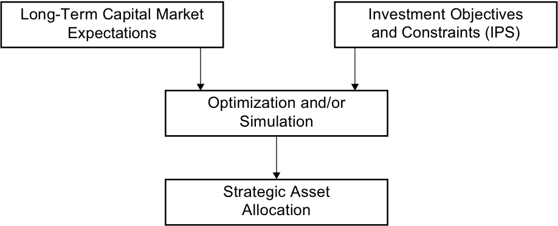
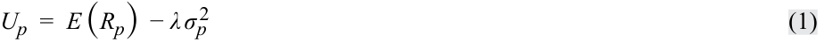
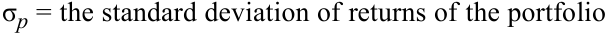
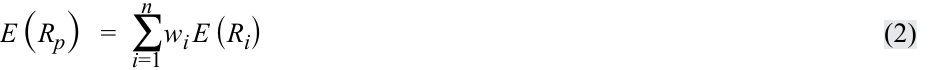
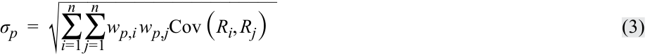
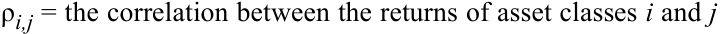
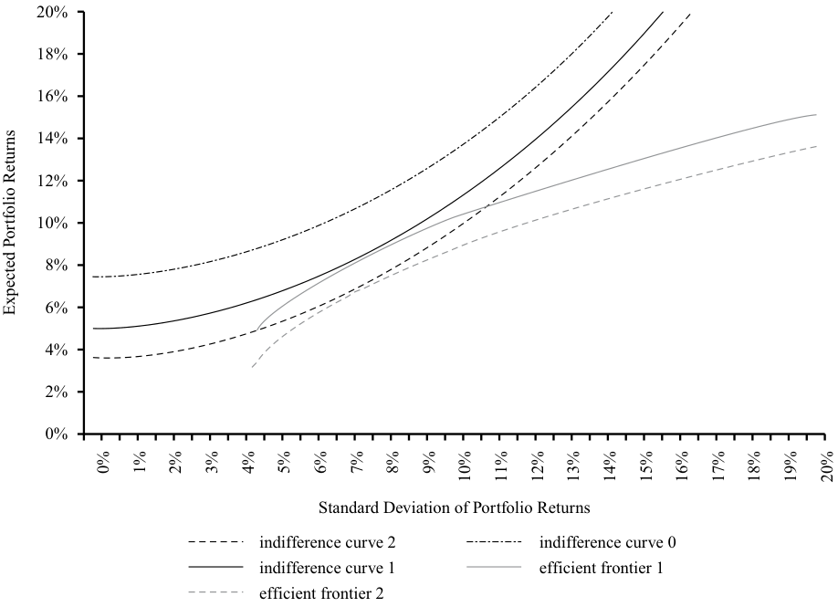
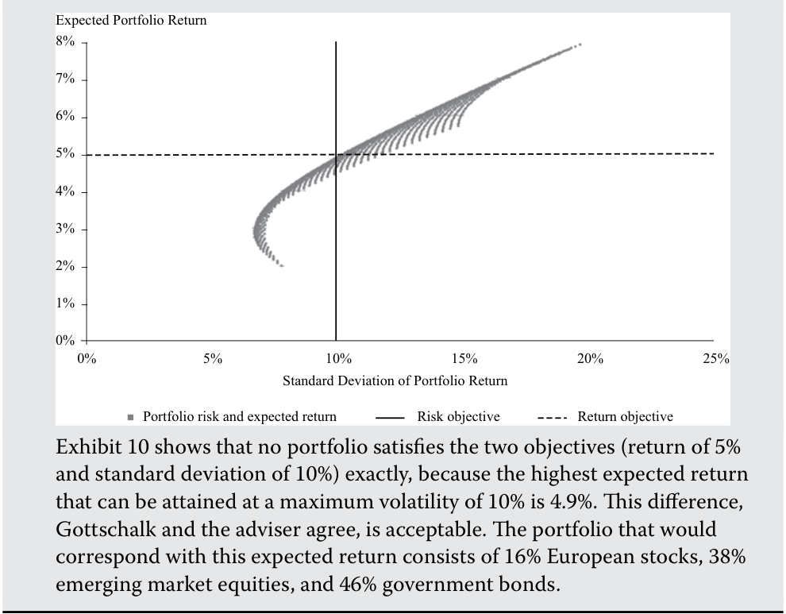

Learning Module 4 Basics of Portfolio Planning and Construction - Part 2: Gathering Client Information
Volume 9: Portfolio Management
Learning Module 4 Basics of Portfolio Planning and Construction
Part 2/3: Gathering Client Information (PDF Pages 185–200)
Tập 9: Quản lý Danh mục Đầu tư (Portfolio Management)
Học phần 4: Cơ bản về Lập kế hoạch và Xây dựng Danh mục Đầu tư (Basics of Portfolio Planning and Construction)
Phần 2/3: Thu thập Thông tin Khách hàng (Gathering Client Information) (Trang PDF 185–200)
less when equities do not perform well. Employees should similarly be wary of having concentrated share positions in the equity of the company where they work. If the employer encounters difficulties, not only may its employees lose their jobs but their investment portfolios could also suffer a significant loss of value.
ít hơn khi thị trường cổ phiếu hoạt động không tốt. Tương tự, người lao động cũng nên cảnh giác với việc nắm giữ các vị thế cổ phiếu tập trung vào vốn cổ phần của chính công ty nơi họ làm việc. Nếu công ty sử dụng lao động gặp khó khăn, nhân viên của công ty không những có thể bị mất việc làm mà danh mục đầu tư của họ cũng có thể phải hứng chịu sự sụt giảm giá trị nghiêm trọng.
GATHERING CLIENT INFORMATION
THU THẬP THÔNG TIN KHÁCH HÀNG (GATHERING CLIENT INFORMATION)
5
5
describe risk and return objectives and how they may be developed for a client
mô tả các mục tiêu rủi ro và tỷ suất sinh lợi cũng như cách thức xây dựng chúng cho một khách hàng
describe the investment constraints of liquidity, time horizon, tax concerns, legal and regulatory factors, and unique circumstances and their implications for the choice of portfolio assets
mô tả các ràng buộc đầu tư về thanh khoản, thời hạn đầu tư, các vấn đề về thuế, các yếu tố pháp lý và quy định, cùng các hoàn cảnh đặc thù và hàm ý của chúng đối với việc lựa chọn tài sản trong danh mục đầu tư
As noted earlier, it is important for portfolio managers and investment advisers to know their clients. For example, in the EU, MiFID II requires financial intermediaries to undertake substantial fact finding. This is required not only in the case of full-service wealth management or in the context of an IPS but also in “lighter” forms of financial intermediation, such as advisory relationships (in which clients make investment decisions after consultation with their investment adviser or broker) or execution-only relationships (in which the client makes investment decisions independently).
Như đã lưu ý trước đó, điều quan trọng đối với các nhà quản lý danh mục đầu tư và cố vấn đầu tư là phải hiểu rõ khách hàng của mình (know their clients). Ví dụ, tại Liên minh Châu Âu (EU), chỉ thị MiFID II yêu cầu các định chế tài chính trung gian phải thực hiện việc thu thập thông tin thực tế (fact finding) một cách kỹ lưỡng. Điều này được yêu cầu không chỉ trong trường hợp quản lý gia sản dịch vụ trọn gói (full-service wealth management) hoặc trong bối cảnh lập bản IPS, mà còn trong cả các hình thức trung gian tài chính “nhẹ nhàng hơn”, chẳng hạn như các mối quan hệ tư vấn (advisory relationships – trong đó khách hàng đưa ra quyết định đầu tư sau khi tham vấn cố vấn đầu tư hoặc nhà môi giới của họ) hoặc các mối quan hệ chỉ thực hiện lệnh (execution-only relationships – trong đó khách hàng tự đưa ra quyết định đầu tư một cách độc lập).
An exercise in fact finding about the customer should take place at the beginning of the client relationship. This process will involve gathering information about the client’s circumstances as well as discussing the client’s objectives and requirements.
Hoạt động thu thập thông tin thực tế về khách hàng nên diễn ra ngay từ khi bắt đầu mối quan hệ với khách hàng. Quy trình này sẽ bao gồm việc thu thập thông tin về hoàn cảnh của khách hàng cũng như thảo luận về các mục tiêu và yêu cầu của khách hàng.
Important data to gather from a client should cover family and employment situation as well as financial information. If the client is an individual, it may also be necessary to know about the situation and requirements of the client’s spouse or other family members. The health of the client and her dependents is also relevant information. In an institutional relationship, it will be important to know about key stakeholders in the organization and what their perspective and requirements are. Information gathering may be done in an informal way or may involve structured interviews, questionnaires, or analysis of data. Many advisers will capture data electronically and use special systems that record data and produce customized reports.
Những dữ liệu quan trọng cần thu thập từ một khách hàng phải bao quát tình hình gia đình và việc làm cũng như thông tin tài chính. Nếu khách hàng là một cá nhân, cũng có thể cần phải biết về tình hình và các yêu cầu của vợ/chồng hoặc các thành viên khác trong gia đình khách hàng. Tình trạng sức khỏe của khách hàng và những người phụ thuộc của họ cũng là thông tin có liên quan. Trong mối quan hệ với khách hàng tổ chức, điều quan trọng là phải biết về các bên liên quan chủ chốt (key stakeholders) trong tổ chức cũng như quan điểm và yêu cầu của họ là gì. Việc thu thập thông tin có thể được thực hiện theo cách không chính thức hoặc có thể bao gồm các cuộc phỏng vấn có cấu trúc, bảng câu hỏi khảo sát, hoặc phân tích dữ liệu. Nhiều cố vấn sẽ thu thập dữ liệu bằng phương thức điện tử và sử dụng các hệ thống chuyên dụng để ghi nhận dữ liệu và tạo ra các báo cáo được cá nhân hóa.
Good recordkeeping is very important and may be crucial in a case in which any aspect of the client relationship comes into dispute at a later stage.
Việc lưu trữ hồ sơ tốt (good recordkeeping) là rất quan trọng và có thể mang tính quyết định trong trường hợp bất kỳ khía cạnh nào của mối quan hệ với khách hàng xảy ra tranh chấp ở giai đoạn sau này.
EXAMPLE 7
VÍ DỤ 7
Marie Gascon: Description of Constraints
Marie Gascon: Mô tả các Ràng buộc (Marie Gascon: Description of Constraints)
Marie Gascon continues to discuss her investment requirements with her financial adviser. The adviser begins to draft the constraints section of the IPS.
Marie Gascon tiếp tục thảo luận về các yêu cầu đầu tư của mình với cố vấn tài chính của cô. Cố vấn bắt đầu phác thảo phần các ràng buộc của bản IPS.
Gascon expects that she will continue to work for the oil company and that her relatively high income will continue for the foreseeable future. Gascon and her husband plan to have no additional children but expect that their son will go to a university at age 18. They expect that their son’s education costs can be met out of their salary income.
Gascon dự kiến rằng cô sẽ tiếp tục làm việc cho công ty dầu khí và mức thu nhập tương đối cao của cô sẽ tiếp tục duy trì trong tương lai gần có thể thấy trước. Gascon và chồng cô dự định không sinh thêm con nhưng kỳ vọng rằng con trai của họ sẽ học đại học vào năm 18 tuổi. Họ dự kiến rằng chi phí học tập của con trai có thể được trang trải từ thu nhập tiền lương của họ.
Gascon’s emergency reserve of €100,000 is considered to be sufficient as a reserve for unforeseen expenditures and emergencies. Her retirement savings of €900,000 has been contributed to her defined-contribution pension plan account to fund her retirement. Under French regulation, pension fund contributions
Khoản dự trữ khẩn cấp 100.000 € của Gascon được xem là đủ để làm khoản dự phòng cho các khoản chi tiêu bất ngờ và các tình huống khẩn cấp. Khoản tiết kiệm hưu trí 900.000 € của cô đã được đóng góp vào tài khoản quỹ hưu trí đóng góp xác định (DC) của cô để tài trợ cho việc nghỉ hưu. Theo quy định của Pháp, các khoản đóng góp vào quỹ hưu trí
are paid from gross income (i.e., income prior to deduction of tax), and pension fund returns are exempt from tax, but pension payments from a fund to retirees are taxed as income to the retiree.
được trích trả từ thu nhập gộp (tức là thu nhập trước khi khấu trừ thuế), và tỷ suất sinh lợi của quỹ hưu trí được miễn thuế, nhưng các khoản chi trả lương hưu từ quỹ cho người nghỉ hưu sẽ bị đánh thuế như thu nhập của người nghỉ hưu.
With respect to Gascon’s retirement savings portfolio, refer back to Example 2 as needed and address the following:
Liên quan đến danh mục đầu tư tiết kiệm hưu trí của Gascon, hãy tham chiếu lại Ví dụ 2 nếu cần và giải quyết các câu hỏi sau:
- As concerns liquidity,
-
A. a maximum of 50% of the portfolio should be invested in liquid assets.
-
B. the portfolio should be invested entirely in liquid assets because of high spending needs.
-
C. the portfolio has no need for liquidity because there are no short-term spending requirements.
- Liên quan đến vấn đề thanh khoản,
-
A. tối đa 50% danh mục đầu tư nên được đầu tư vào các tài sản có tính thanh khoản.
-
B. danh mục đầu tư nên được đầu tư hoàn toàn vào các tài sản có tính thanh khoản vì nhu cầu chi tiêu cao.
-
C. danh mục đầu tư không có nhu cầu về thanh khoản bởi vì không có các yêu cầu chi tiêu ngắn hạn.
Solution:
Lời giải:
C is correct. The assets are for retirement use, which is 20 years away. Any short-term spending needs will be met from other assets or income.
C là đáp án đúng. Các tài sản này dành cho mục đích sử dụng khi nghỉ hưu, tức là còn 20 năm nữa. Bất kỳ nhu cầu chi tiêu ngắn hạn nào cũng sẽ được đáp ứng từ các tài sản khác hoặc từ thu nhập tiền lương.
- The investment time horizon is closest to
-
A. 5 years.
-
B. 20 years.
-
C. 40 years.
- Thời hạn đầu tư gần nhất với mức nào sau đây?
-
A. 5 năm.
-
B. 20 năm.
-
C. 40 năm.
Solution:
Lời giải:
B is correct. The relevant time horizon is to the retirement date, which is 20 years away. The assets may not be liquidated at that point, but a restructuring of the portfolio is to be expected as Gascon starts to draw an income from it.
B là đáp án đúng. Thời hạn đầu tư có liên quan là tính đến ngày nghỉ hưu, tức là 20 năm nữa. Các tài sản có thể không bị thanh lý tại thời điểm đó, nhưng việc tái cấu trúc lại danh mục đầu tư là điều được dự kiến khi Gascon bắt đầu rút thu nhập từ danh mục.
- As concerns taxation, the portfolio
-
A. should emphasize capital gains because income is taxable.
-
B. should emphasize income because capital gains are taxable.
-
C. is tax exempt and thus indifferent between income and capital gains.
- Liên quan đến vấn đề thuế, danh mục đầu tư
-
A. nên chú trọng vào lãi vốn bởi vì thu nhập định kỳ phải chịu thuế.
-
B. nên chú trọng vào thu nhập định kỳ bởi vì lãi vốn phải chịu thuế.
-
C. được miễn thuế và do đó bàng quan giữa thu nhập định kỳ và lãi vốn.
Solution:
Lời giải:
C is correct. Because no tax is paid in the pension fund, it does not matter whether returns come in the form of income or capital gains.
C là đáp án đúng. Bởi vì không phải nộp thuế bên trong quỹ hưu trí, nên việc tỷ suất sinh lợi đến dưới hình thức thu nhập định kỳ hay lãi vốn không có gì khác biệt.
- The principle legal and regulatory factors applying to the portfolio are
-
A. US securities laws.
-
B. European banking laws.
-
C. French pension fund regulations.
- Các yếu tố pháp lý và quy định quản lý chính áp dụng cho danh mục đầu tư là
-
A. luật chứng khoán Hoa Kỳ.
-
B. luật ngân hàng Châu Âu.
-
C. các quy định về quỹ hưu trí của Pháp.
Solution:
Lời giải:
C is correct. Management of the portfolio will have to comply with any rules relating to French pension funds.
C là đáp án đúng. Việc quản lý danh mục đầu tư sẽ phải tuân thủ bất kỳ quy tắc nào liên quan đến các quỹ hưu trí của Pháp.
- As concerns unique needs, the portfolio should
-
A. have a high weighting in oil and other commodity stocks.
-
B. be invested only in responsible and sustainable investments.
- Liên quan đến các nhu cầu đặc thù, danh mục đầu tư nên
-
A. có tỷ trọng cao vào các cổ phiếu ngành dầu khí và hàng hóa khác.
-
B. chỉ được đầu tư vào các khoản đầu tư có trách nhiệm và bền vững.
C. not have significant exposure to oil and other commodity stocks.
- C. không có mức tiếp xúc đáng kể với các cổ phiếu ngành dầu khí và hàng hóa khác.
Solution:
Lời giải:
C is correct. Gascon’s human capital (i.e., future labor income) is affected by the prospects of the oil industry. If her portfolio has significant exposure to oil stocks, she would be increasing a risk exposure she already has.
C là đáp án đúng. Vốn nhân lực (human capital – tức là thu nhập từ sức lao động trong tương lai) của Gascon chịu ảnh hưởng bởi triển vọng của ngành dầu khí. Nếu danh mục đầu tư của cô có mức tiếp xúc đáng kể với cổ phiếu dầu khí, cô sẽ làm gia tăng thêm một mức tiếp xúc rủi ro mà bản thân cô vốn đã gánh chịu sẵn.
Example 8, the final one based on Marie Gascon, shows how the information obtained from the fact-finding exercises might be incorporated into the objectives and constraints section of an IPS.
Ví dụ 8, ví dụ cuối cùng dựa trên trường hợp của Marie Gascon, cho thấy cách thức các thông tin thu được từ quá trình thu thập thông tin thực tế có thể được đưa vào phần mục tiêu và ràng buộc của một bản IPS như thế nào.
EXAMPLE 8
VÍ DỤ 8
Marie Gascon: Outline of an IPS
Marie Gascon: Đề cương một Bản IPS (Marie Gascon: Outline of an IPS)
Following is a simplified excerpt from the IPS the adviser prepares for Marie Gascon, covering objectives and constraints.
Dưới đây là một đoạn trích đã được giản lược từ bản IPS mà người cố vấn chuẩn bị cho Marie Gascon, bao gồm các mục tiêu và ràng buộc.
Risk Objectives:
Các Mục tiêu Rủi ro (Risk Objectives):
-
The portfolio may take on relatively high amounts of risk in seeking to meet the return requirements. With a 20-year time horizon and significant assets and income, the client has an above-average ability to take risk. The client is a knowledgeable investor, with an above-average willingness to take risk. Hence, the client’s risk tolerance is above average, explaining the aforementioned portfolio risk objective.
-
The portfolio should be well diversified with respect to asset classes and concentration of positions within an asset class. Although the client has above-average risk tolerance, his investment assets should be diversified to control the risk of catastrophic loss.
-
Danh mục đầu tư có thể gánh chịu mức rủi ro tương đối cao trong quá trình tìm cách đáp ứng các yêu cầu về tỷ suất sinh lợi. Với thời hạn đầu tư 20 năm cùng khối tài sản và thu nhập đáng kể, khách hàng có khả năng chấp nhận rủi ro trên mức trung bình. Khách hàng là một nhà đầu tư am hiểu kiến thức, có mức độ sẵn lòng chấp nhận rủi ro trên mức trung bình. Do đó, mức độ chấp nhận rủi ro của khách hàng ở trên mức trung bình, giải thích cho mục tiêu rủi ro của danh mục đầu tư đã nêu ở trên.
-
Danh mục đầu tư cần được đa dạng hóa tốt xét theo các loại tài sản và mức độ tập trung của các vị thế trong cùng một loại tài sản. Mặc dù khách hàng có mức độ chấp nhận rủi ro trên mức trung bình, các tài sản đầu tư vẫn cần được đa dạng hóa để kiểm soát rủi ro tổn thất thảm khốc (catastrophic loss).
Return Objectives:
Các Mục tiêu Tỷ suất sinh lợi (Return Objectives):
- The portfolio’s long-term return requirement is 6.2% per year, in nominal terms and net of fees, to meet the client’s retirement income goal.
- Yêu cầu về tỷ suất sinh lợi dài hạn của danh mục đầu tư là 6,2% mỗi năm, tính theo giá trị danh nghĩa và sau khi trừ phí (net of fees), nhằm đáp ứng mục tiêu thu nhập hưu trí của khách hàng.
Constraints:
Các Ràng buộc (Constraints):
-
Liquidity : The portfolio consists of pension fund assets, and there is no need for liquidity in the short to medium term.
-
Time Horizon : The portfolio will be invested with a 20-year time horizon. The client intends to retire in 20 years, at which time an income will be drawn from the portfolio.
-
Tax Status : Under French law, contributions to the fund are made gross of tax and returns in the fund are tax-free. Hence, the client is indifferent between income and capital gains in the fund.
-
Legal and Regulatory Factors : Management of the portfolio must comply with French pension fund regulations.
-
Unique Needs : The client is an executive in the oil industry. The portfolio should strive to minimize additional exposures to oil and related stocks.
-
Thanh khoản (Liquidity) : Danh mục đầu tư bao gồm các tài sản thuộc quỹ hưu trí, và không có nhu cầu thanh khoản trong ngắn hạn đến trung hạn.
-
Thời hạn Đầu tư (Time Horizon) : Danh mục đầu tư sẽ được đầu tư với thời hạn 20 năm. Khách hàng dự định nghỉ hưu sau 20 năm nữa, và tại thời điểm đó một khoản thu nhập sẽ được rút ra từ danh mục đầu tư.
-
Tình trạng Thuế (Tax Status) : Theo luật pháp của Pháp, các khoản đóng góp vào quỹ được thực hiện từ thu nhập trước thuế và tỷ suất sinh lợi tạo ra trong quỹ được miễn thuế. Do đó, khách hàng hoàn toàn bàng quan giữa thu nhập định kỳ và lãi vốn bên trong quỹ.
-
Các Yếu tố Pháp lý và Quy định (Legal and Regulatory Factors) : Việc quản lý danh mục đầu tư phải tuân thủ các quy định về quỹ hưu trí của Pháp.
-
Các Nhu cầu Đặc thù (Unique Needs) : Khách hàng là một nhà điều hành trong ngành dầu khí. Danh mục đầu tư cần nỗ lực tối thiểu hóa các mức tiếp xúc tăng thêm đối với ngành dầu khí và các cổ phiếu có liên quan.
6
6
PORTFOLIO CONSTRUCTION AND CAPITAL MARKET EXPECTATIONS
XÂY DỰNG DANH MỤC ĐẦU TƯ VÀ CÁC KỲ VỌNG THỊ TRƯỜNG VỐN (PORTFOLIO CONSTRUCTION AND CAPITAL MARKET EXPECTATIONS)
explain the specification of asset classes in relation to asset allocation describe the principles of portfolio construction and the role of asset allocation in relation to the IPS
giải thích việc xác định các loại tài sản trong mối liên hệ với phân bổ tài sản; mô tả các nguyên tắc xây dựng danh mục đầu tư và vai trò của phân bổ tài sản trong mối liên hệ với IPS
Once the IPS has been compiled, the investment manager can construct a suitable portfolio. Strategic asset allocation is a traditional focus of the first steps in portfolio construction. The strategic asset allocation is stated in terms of percentage allocations to asset classes. An asset class is a category of assets that have similar characteristics, attributes, and risk–return relationships. The strategic asset allocation (SAA) is the set of exposures to IPS-permissible asset classes that is expected to achieve the client’s long-term objectives given the client’s risk profile and investment constraints. An SAA could include a policy of hedging portfolio risks not explicitly covered by asset class weights. The obvious examples are hedge ratios for foreign currency exposure, or the management of interest rate risk resulting from asset-liability mismatch, and the hedging of inflation risk. So-called “overlay” portfolios of derivatives are often used for this purpose.
Một khi bản IPS đã được biên soạn xong, nhà quản lý đầu tư có thể xây dựng một danh mục đầu tư phù hợp. Phân bổ tài sản chiến lược (strategic asset allocation) là trọng tâm truyền thống của những bước đầu tiên trong quá trình xây dựng danh mục đầu tư. Phân bổ tài sản chiến lược được biểu thị dưới dạng tỷ lệ phần trăm phân bổ vào các loại tài sản (asset classes). Một loại tài sản (asset class) là một nhóm các tài sản có các đặc điểm, thuộc tính và mối quan hệ rủi ro – lợi nhuận tương tự nhau. Phân bổ tài sản chiến lược (strategic asset allocation – SAA) là tập hợp các mức tiếp xúc với những loại tài sản được phép đầu tư theo quy định của IPS, được kỳ vọng sẽ giúp đạt được các mục tiêu dài hạn của khách hàng xét trên hồ sơ rủi ro và các ràng buộc đầu tư của khách hàng đó. Một bản SAA có thể bao gồm một chính sách phòng vệ (hedging) các rủi ro của danh mục đầu tư chưa được bao quát một cách tường minh bởi tỷ trọng của các loại tài sản. Những ví dụ hiển nhiên là các tỷ lệ phòng vệ rủi ro (hedge ratios) đối với mức tiếp xúc ngoại tệ, hoặc việc quản lý rủi ro lãi suất phát sinh từ sự lệch pha giữa tài sản và nợ phải trả (asset-liability mismatch), cũng như việc phòng vệ rủi ro lạm phát. Các danh mục đầu tư “phủ ngoài (overlay portfolios)” sử dụng các công cụ phái sinh thường được dùng cho mục đích này.
The focus on the SAA is the result of a number of important investment principles. One principle is that a portfolio’s systematic risk accounts for most of its change in value over the long term. Systematic risk is risk related to the economic system (e.g., risk related to business cycle) that cannot be eliminated by holding a diversified portfolio. This risk is different from nonsystematic risk , defined as the unique risks of particular assets, which may be avoided by holding other assets with offsetting risks. A second principle is that the returns to groups of similar assets (e.g., long-term debt claims) predictably reflect exposures to certain sets of systematic factors (e.g., for the debt claims, unexpected changes in the interest rate). Thus, the SAA is a means of providing the investor with exposure to the systematic risks of asset classes in proportions that meet the risk and return objectives.
Sự tập trung vào SAA là kết quả của một số nguyên tắc đầu tư quan trọng. Nguyên tắc thứ nhất là rủi ro hệ thống (systematic risk) của một danh mục đầu tư giải thích cho phần lớn sự thay đổi giá trị của danh mục đó trong dài hạn. Rủi ro hệ thống (Systematic risk) là rủi ro liên quan đến hệ thống kinh tế (ví dụ: rủi ro liên quan đến chu kỳ kinh doanh) không thể bị loại bỏ bằng cách nắm giữ một danh mục đầu tư đa dạng hóa. Rủi ro này khác với rủi ro phi hệ thống (nonsystematic risk), được định nghĩa là những rủi ro đặc thù riêng biệt của từng tài sản cụ thể, vốn có thể tránh được bằng cách nắm giữ các tài sản khác có những rủi ro bù trừ lẫn nhau. Nguyên tắc thứ hai là tỷ suất sinh lợi của các nhóm tài sản tương tự nhau (ví dụ: các khoản trái quyền nợ dài hạn) phản ánh một cách có thể dự đoán được mức tiếp xúc với những tập hợp nhân tố hệ thống nhất định (ví dụ: đối với các khoản trái quyền nợ, đó là những thay đổi bất ngờ của lãi suất). Như vậy, SAA là một phương tiện cung cấp cho nhà đầu tư mức tiếp xúc với các rủi ro hệ thống của các loại tài sản theo những tỷ trọng nhằm đáp ứng được các mục tiêu rủi ro và tỷ suất sinh lợi.
The process of formulating a strategic asset allocation is based on the IPS, already discussed, and capital market expectations.
Quy trình xây dựng một phân bổ tài sản chiến lược được dựa trên bản IPS (đã được thảo luận) và các kỳ vọng thị trường vốn (capital market expectations).
Capital Market Expectations
Kỳ vọng Thị trường Vốn (Capital Market Expectations)
Capital market expectations are the investor’s expectations concerning the risk and return prospects of asset classes, however broadly or narrowly the investor defines those asset classes. When associated with the client’s investment objectives, the result is the strategic asset allocation that is expected to allow the client to achieve his investment objectives (at least under normal capital market conditions).
Kỳ vọng thị trường vốn (Capital market expectations) là những kỳ vọng của nhà đầu tư liên quan đến triển vọng rủi ro và tỷ suất sinh lợi của các loại tài sản, bất kể nhà đầu tư định nghĩa các loại tài sản đó rộng hay hẹp như thế nào. Khi được kết hợp với các mục tiêu đầu tư của khách hàng, kết quả thu được sẽ là phân bổ tài sản chiến lược dự kiến cho phép khách hàng đạt được các mục tiêu đầu tư của mình (ít nhất là trong các điều kiện thị trường vốn bình thường).
Traditionally, capital market expectations are quantified in terms of asset class expected returns, standard deviation of returns, and correlations among pairs of asset classes. Formally, the expected return of an asset class consists of the risk-free rate and one or more risk premium(s) associated with the asset class. Expected returns are in practice developed in a variety of ways, including the use of historical estimates, economic analysis, and various kinds of valuation models. Standard deviations and correlation estimates are frequently based on historical data and risk models.
Theo truyền thống, các kỳ vọng thị trường vốn được lượng hóa dưới dạng tỷ suất sinh lợi kỳ vọng của các loại tài sản, độ lệch chuẩn của tỷ suất sinh lợi, và hệ số tương quan giữa các cặp loại tài sản. Về mặt hình thức, tỷ suất sinh lợi kỳ vọng của một loại tài sản bao gồm lãi suất phi rủi ro (risk-free rate) và một hoặc nhiều phần bù rủi ro (risk premiums) gắn liền với loại tài sản đó. Trên thực tế, tỷ suất sinh lợi kỳ vọng được xây dựng theo nhiều cách khác nhau, bao gồm việc sử dụng các ước lượng lịch sử, phân tích kinh tế, và các loại mô hình định giá khác nhau. Các ước lượng về độ lệch chuẩn và hệ số tương quan thường được dựa trên dữ liệu lịch sử và các mô hình rủi ro.
STRATEGIC ASSET ALLOCATION
PHÂN BỔ TÀI SẢN CHIẾN LƯỢC (STRATEGIC ASSET ALLOCATION)
7
7
explain the specification of asset classes in relation to asset allocation describe the principles of portfolio construction and the role of asset allocation in relation to the IPS
giải thích việc xác định các loại tài sản trong mối liên hệ với phân bổ tài sản; mô tả các nguyên tắc xây dựng danh mục đầu tư và vai trò của phân bổ tài sản trong mối liên hệ với IPS
Traditionally, investors have distinguished cash, equities, bonds (government and corporate), and real estate as the major asset classes. In recent years, this list has been expanded with private equity, hedge funds, high-yield and emerging market bonds, and commodities. In addition, such assets as art and intellectual property rights may be considered asset classes for those investors prepared to take a more innovative approach and to accept some illiquidity. Combining such new asset classes as well as hedge funds and private equity under the header “alternative investments” has become accepted practice.
Theo truyền thống, các nhà đầu tư phân biệt tiền mặt, cổ phiếu, trái phiếu (chính phủ và doanh nghiệp), và bất động sản là những loại tài sản chính. Trong những năm gần đây, danh sách này đã được mở rộng thêm với vốn cổ phần tư nhân (private equity), quỹ phòng hộ (hedge funds), trái phiếu lợi suất cao và trái phiếu thị trường mới nổi (high-yield and emerging market bonds), cùng hàng hóa (commodities). Ngoài ra, những tài sản như tác phẩm nghệ thuật và quyền sở hữu trí tuệ có thể được coi là các loại tài sản đối với những nhà đầu tư sẵn sàng áp dụng một cách tiếp cận mang tính đổi mới sáng tạo hơn và chấp nhận một mức độ kém thanh khoản nhất định. Việc gộp các loại tài sản mới như vậy cũng như các quỹ phòng hộ và vốn cổ phần tư nhân dưới tiêu đề chung là “các khoản đầu tư thay thế (alternative investments)” đã trở thành thông lệ được chấp nhận rộng rãi.
As the strategic asset allocation is built up by asset classes, the decision about how to define those asset classes is an important one. Defining the asset classes also determines the extent to which the investor controls the risk and return characteristics of the eventual investment portfolio. For example, separating bonds into government bonds and corporate bonds, and then further separating corporate bonds into investment grade and non-investment grade (high yield) and government bonds into domestic and foreign government bonds, creates four bond categories. For these categories, risk–return expectations can be expressed and correlations with other asset classes (and, in an asset–liability management context, with the liabilities) can be estimated. An investment manager who wants to explicitly consider the risk–return characteristics of those bond categories in the strategic asset allocation may choose to treat them as distinct asset classes. Similarly, in equities, some investors distinguish between emerging market and developed market equities, between domestic and international equities, or between large-cap and small-cap equities. In some regulatory environments for institutional investors, asset class definitions are mandatory, thereby forcing investment managers to articulate risk–return expectations (and apply risk management) on the asset classes specified. Conversely, a broader categorization of asset classes leaves the allocation between different categories of bonds and equities, for example, to managers responsible for these asset classes.
Bởi vì phân bổ tài sản chiến lược được xây dựng từ các loại tài sản, nên quyết định về việc định nghĩa các loại tài sản đó như thế nào là một quyết định rất quan trọng. Việc định nghĩa các loại tài sản cũng quyết định mức độ mà nhà đầu tư kiểm soát các đặc tính rủi ro và tỷ suất sinh lợi của danh mục đầu tư cuối cùng. Ví dụ, việc tách trái phiếu thành trái phiếu chính phủ và trái phiếu doanh nghiệp, sau đó tiếp tục tách trái phiếu doanh nghiệp thành trái phiếu hạng đầu tư (investment grade) và trái phiếu dưới hạng đầu tư (lợi suất cao – high yield), đồng thời tách trái phiếu chính phủ thành trái phiếu chính phủ trong nước và nước ngoài, sẽ tạo ra bốn danh mục trái phiếu. Đối với các danh mục này, các kỳ vọng rủi ro – lợi nhuận có thể được thiết lập rõ ràng và hệ số tương quan với các loại tài sản khác (và, trong bối cảnh quản lý tài sản – nợ phải trả, là tương quan với các khoản nợ phải trả) có thể được ước lượng. Một nhà quản lý đầu tư muốn xem xét một cách tường minh các đặc tính rủi ro – lợi nhuận của những danh mục trái phiếu đó trong phân bổ tài sản chiến lược có thể chọn cách đối xử với chúng như những loại tài sản riêng biệt. Tương tự, đối với cổ phiếu, một số nhà đầu tư phân biệt giữa cổ phiếu thị trường mới nổi và cổ phiếu thị trường phát triển, giữa cổ phiếu trong nước và cổ phiếu quốc tế, hoặc giữa cổ phiếu vốn hóa lớn và cổ phiếu vốn hóa nhỏ. Trong một số môi trường pháp lý dành cho các nhà đầu tư tổ chức, các định nghĩa về loại tài sản là bắt buộc, qua đó buộc các nhà quản lý đầu tư phải xác lập rõ kỳ vọng rủi ro – lợi nhuận (và áp dụng quản trị rủi ro) trên các loại tài sản đã được chỉ định. Ngược lại, việc phân loại rộng hơn đối với các loại tài sản sẽ nhường quyền phân bổ giữa các danh mục trái phiếu và cổ phiếu khác nhau cho các nhà quản lý chịu trách nhiệm trực tiếp về các loại tài sản đó.
When defining asset classes, a number of criteria apply. Intuitively, an asset class should contain relatively homogeneous assets while providing diversification relative to other asset classes. In statistical terms, risk and return expectations should be similar, and paired correlations of assets should be relatively high within an asset class but should be lower versus assets in other asset classes. Also, the asset classes, while being mutually exclusive, should add up to a sufficient approximation of the relevant investable universe. Applying these criteria ensures that the strategic asset allocation process has considered all available investment alternatives.
Khi định nghĩa các loại tài sản, có một số tiêu chí cần được áp dụng. Về mặt trực giác, một loại tài sản nên bao gồm các tài sản tương đối đồng nhất (homogeneous assets) với nhau trong khi vẫn mang lại sự đa dạng hóa tương đối so với các loại tài sản khác. Xét về mặt thống kê, các kỳ vọng về rủi ro và tỷ suất sinh lợi phải tương tự nhau, và các hệ số tương quan từng cặp (paired correlations) của các tài sản phải tương đối cao bên trong cùng một loại tài sản nhưng phải thấp hơn khi so với các tài sản thuộc các loại tài sản khác. Đồng thời, các loại tài sản, trong khi phải loại trừ lẫn nhau (mutually exclusive), khi cộng gộp lại phải xấp xỉ bao quát đủ tập hợp đầu tư khả thi (investable universe) có liên quan. Việc áp dụng các tiêu chí này đảm bảo rằng quy trình phân bổ tài sản chiến lược đã xem xét tất cả các phương án đầu tư thay thế hiện có.
EXAMPLE 9
VÍ DỤ 9
Specifying Asset Classes
Xác định các Loại Tài sản (Specifying Asset Classes)
The strategic asset allocations of many institutional investors make a distinction between domestic equities and international equities or between developed market equities and emerging market equities. Often, equities are separated into different market capitalization brackets, resulting, for example, in an asset class such as domestic small-cap equity.
Phân bổ tài sản chiến lược của nhiều nhà đầu tư tổ chức tạo ra sự phân biệt giữa cổ phiếu trong nước và cổ phiếu quốc tế hoặc giữa cổ phiếu thị trường phát triển và cổ phiếu thị trường mới nổi. Thông thường, cổ phiếu còn được tách thành các khung quy mô vốn hóa thị trường khác nhau, tạo ra, ví dụ, một loại tài sản như cổ phiếu vốn hóa nhỏ trong nước (domestic small-cap equity).
The correlation matrix in Exhibit 5 shows the paired correlations of monthly returns between different equity asset classes and other asset classes. Specifically, these correlations are measured over the period from December 2000 through August 2018. In addition, the exhibit shows the annualized volatility of monthly returns.
Ma trận tương quan trong Bảng minh họa 5 cho thấy các hệ số tương quan từng cặp của tỷ suất sinh lợi hàng tháng giữa các loại tài sản cổ phiếu khác nhau và các loại tài sản khác. Cụ thể, các hệ số tương quan này được đo lường trong giai đoạn từ tháng 12 năm 2000 đến hết tháng 8 năm 2018. Ngoài ra, bảng minh họa còn cho thấy độ biến động năm hóa (annualized volatility) của tỷ suất sinh lợi hàng tháng.
Exhibit 5: Asset Class Correlation Matrix
Bảng minh họa 5: Ma trận Tương quan các Loại Tài sản (Asset Class Correlation Matrix)
| US Small- | European | US High- | ||||||||
|---|---|---|---|---|---|---|---|---|---|---|
| Correlations | US Equities |
Emerging Markets |
European Equities |
Japanese Equities |
Cap Equities |
Commod- ities |
Gov’t. Bonds |
US Treasuries |
US Credits |
Yield Credit |
| US Equities | 1.00 | 0.78 | 0.88 | 0.59 | 0.89 | 0.32 | 0.08 | –0.37 | 0.19 | 0.66 |
| Emerging Markets Equities |
0.78 | 1.00 | 0.84 | 0.64 | 0.75 | 0.46 | 0.21 | –0.24 | 0.34 | 0.70 |
| European Equities |
0.88 | 0.84 | 1.00 | 0.64 | 0.79 | 0.43 | 0.16 | –0.28 | 0.29 | 0.68 |
| Japanese Equities |
0.59 | 0.64 | 0.64 | 1.00 | 0.57 | 0.32 | 0.24 | –0.18 | 0.29 | 0.52 |
| US Small-Cap Equities |
0.89 | 0.75 | 0.79 | 0.57 | 1.00 | 0.32 | 0.09 | –0.36 | 0.19 | 0.69 |
| Commodities | 0.32 | 0.46 | 0.43 | 0.32 | 0.32 | 1.00 | 0.13 | –0.18 | 0.12 | 0.36 |
| European Gov’t. Bonds |
0.08 | 0.21 | 0.16 | 0.24 | 0.09 | 0.13 | 1.00 | 0.45 | 0.60 | 0.30 |
| US | –0.37 | –0.24 | –0.28 | –0.18 | –0.36 | –0.18 | 0.45 | 1.00 | 0.58 | –0.19 |
| Treasuries | ||||||||||
| US Credits | 0.19 | 0.34 | 0.29 | 0.29 | 0.19 | 0.12 | 0.60 | 0.58 | 1.00 | 0.54 |
| US High-Yield Credit |
0.66 | 0.70 | 0.68 | 0.52 | 0.69 | 0.36 | 0.30 | –0.19 | 0.54 | 1.00 |
| Volatility | 14.3% | 21.6% | 18.4% | 15.6% | 18.4% | 22.3% | 4.9% | 4.4% | 5.5% | 9.3% |
| Hệ số tương quan (Correlations) | Cổ phiếu Hoa Kỳ (US Equities) | Cổ phiếu Thị trường Mới nổi (Emerging Markets Equities) | Cổ phiếu Châu Âu (European Equities) | Cổ phiếu Nhật Bản (Japanese Equities) | Cổ phiếu Vốn hóa Nhỏ Hoa Kỳ (US Small-Cap Equities) | Hàng hóa (Commodities) | Trái phiếu Chính phủ Châu Âu (European Gov’t. Bonds) | Trái phiếu Kho bạc Hoa Kỳ (US Treasuries) | Tín dụng Hoa Kỳ (US Credits) | Tín dụng Lợi suất Cao Hoa Kỳ (US High-Yield Credit) |
|---|---|---|---|---|---|---|---|---|---|---|
| Cổ phiếu Hoa Kỳ (US Equities) | 1,00 | 0,78 | 0,88 | 0,59 | 0,89 | 0,32 | 0,08 | –0,37 | 0,19 | 0,66 |
| Cổ phiếu Thị trường Mới nổi (Emerging Markets Equities) | 0,78 | 1,00 | 0,84 | 0,64 | 0,75 | 0,46 | 0,21 | –0,24 | 0,34 | 0,70 |
| Cổ phiếu Châu Âu (European Equities) | 0,88 | 0,84 | 1,00 | 0,64 | 0,79 | 0,43 | 0,16 | –0,28 | 0,29 | 0,68 |
| Cổ phiếu Nhật Bản (Japanese Equities) | 0,59 | 0,64 | 0,64 | 1,00 | 0,57 | 0,32 | 0,24 | –0,18 | 0,29 | 0,52 |
| Cổ phiếu Vốn hóa Nhỏ Hoa Kỳ (US Small-Cap Equities) | 0,89 | 0,75 | 0,79 | 0,57 | 1,00 | 0,32 | 0,09 | –0,36 | 0,19 | 0,69 |
| Hàng hóa (Commodities) | 0,32 | 0,46 | 0,43 | 0,32 | 0,32 | 1,00 | 0,13 | –0,18 | 0,12 | 0,36 |
| Trái phiếu Chính phủ Châu Âu (European Gov’t. Bonds) | 0,08 | 0,21 | 0,16 | 0,24 | 0,09 | 0,13 | 1,00 | 0,45 | 0,60 | 0,30 |
| Trái phiếu Kho bạc Hoa Kỳ (US Treasuries) | –0,37 | –0,24 | –0,28 | –0,18 | –0,36 | –0,18 | 0,45 | 1,00 | 0,58 | –0,19 |
| Tín dụng Hoa Kỳ (US Credits) | 0,19 | 0,34 | 0,29 | 0,29 | 0,19 | 0,12 | 0,60 | 0,58 | 1,00 | 0,54 |
| Tín dụng Lợi suất Cao Hoa Kỳ (US High-Yield Credit) | 0,66 | 0,70 | 0,68 | 0,52 | 0,69 | 0,36 | 0,30 | –0,19 | 0,54 | 1,00 |
| Độ biến động (Volatility) | 14,3% | 21,6% | 18,4% | 15,6% | 18,4% | 22,3% | 4,9% | 4,4% | 5,5% | 9,3% |
Correlations and volatilities have been calculated using monthly returns from December 2000 through August 2018, unhedged, in USD.
Các hệ số tương quan và độ biến động đã được tính toán bằng cách sử dụng tỷ suất sinh lợi hàng tháng từ tháng 12 năm 2000 đến hết tháng 8 năm 2018, không phòng vệ rủi ro tỷ giá, tính bằng USD.
Source: MSCI Bloomberg, S&P
Nguồn: MSCI, Bloomberg, S&P.
Based only on the information given, address the following:
Chỉ dựa trên những thông tin được cung cấp, hãy giải quyết các yêu cầu sau:
- Contrast the correlations between equity asset classes with the correlations between equity asset classes and US Treasuries.
- Hãy đối chiếu các hệ số tương quan giữa các loại tài sản cổ phiếu với nhau và các hệ số tương quan giữa các loại tài sản cổ phiếu với Trái phiếu Kho bạc Hoa Kỳ (US Treasuries).
Solution:
Lời giải:
The matrix reveals very strong correlation between the equity asset classes. For example, the correlation between European equities and US equities is 0.88. The correlation of equities with bonds, however, is much lower. For example, US equities, emerging markets equities, European equities, and Japanese equities all have negative correlation with US government bonds (–0.37, –0.24 and –0.28, and –0.18, respectively). It is worth noting, however, that correlations can vary through time and the values shown may be specific to the sample period used.
Ma trận cho thấy mối tương quan rất mạnh giữa các loại tài sản cổ phiếu với nhau. Ví dụ, hệ số tương quan giữa cổ phiếu Châu Âu và cổ phiếu Hoa Kỳ là 0,88. Tuy nhiên, hệ số tương quan của cổ phiếu với trái phiếu lại thấp hơn nhiều. Ví dụ, cổ phiếu Hoa Kỳ, cổ phiếu thị trường mới nổi, cổ phiếu Châu Âu, và cổ phiếu Nhật Bản đều có tương quan âm với trái phiếu chính phủ Hoa Kỳ (lần lượt là –0,37; –0,24; –0,28; và –0,18). Tuy nhiên, cần lưu ý rằng các hệ số tương quan có thể thay đổi theo thời gian và các giá trị được hiển thị có thể mang tính đặc thù đối với giai đoạn mẫu được sử dụng.
- The monthly returns of which equity asset class differ the most from US equities?
- Tỷ suất sinh lợi hàng tháng của loại tài sản cổ phiếu nào có sự khác biệt lớn nhất so với cổ phiếu Hoa Kỳ?
Solution:
Lời giải:
Among equity asset classes as listed in the table, the correlation between US and Japanese equities is the lowest, at 0.59. By contrast, correlations between US equities and emerging markets, European, and US small cap equities are 0.78 or higher.
Trong số các loại tài sản cổ phiếu được liệt kê trong bảng, hệ số tương quan giữa cổ phiếu Hoa Kỳ và cổ phiếu Nhật Bản là thấp nhất, ở mức 0,59. Ngược lại, các hệ số tương quan giữa cổ phiếu Hoa Kỳ với cổ phiếu thị trường mới nổi, cổ phiếu Châu Âu, và cổ phiếu vốn hóa nhỏ Hoa Kỳ đều từ 0,78 trở lên.
Using correlation as a metric, Example 9 tends to indicate that only emerging markets were well differentiated from European equities. So, why do investors still often subdivide equities? Apart from any regulatory reasons, one explanation might be that this decomposition into smaller asset classes corresponds to the way the asset allocation is structured in portfolios. Many investment managers have expertise exclusively in specific areas of the market, such as emerging market equities, US small-cap equity, or international investment-grade credit. Bringing the asset class definitions of the asset allocation in line with investment products actually available in the market may simplify matters from an organizational perspective.
Nếu sử dụng hệ số tương quan làm thước đo, Ví dụ 9 có xu hướng chỉ ra rằng chỉ có cổ phiếu Nhật Bản (và ở mức độ thấp hơn là thị trường mới nổi) mới có sự phân hóa rõ nét so với các cổ phiếu khác. Vậy tại sao các nhà đầu tư vẫn thường chia nhỏ cổ phiếu ra thành nhiều phân nhóm? Ngoài bất kỳ lý do pháp lý nào, một lời giải thích có thể là việc phân tách thành các loại tài sản nhỏ hơn như vậy tương ứng với cách thức cấu trúc phân bổ tài sản trong thực tế của các danh mục đầu tư. Nhiều nhà quản lý đầu tư chỉ có chuyên môn sâu độc quyền trong những lĩnh vực cụ thể của thị trường, chẳng hạn như cổ phiếu thị trường mới nổi, cổ phiếu vốn hóa nhỏ của Hoa Kỳ, hoặc tín dụng hạng đầu tư quốc tế. Việc đưa các định nghĩa về loại tài sản của quá trình phân bổ tài sản đồng bộ với các sản phẩm đầu tư thực tế hiện có trên thị trường có thể giúp đơn giản hóa mọi việc dưới góc độ tổ chức vận hành.
The risk–return profile of the strategic asset allocation depends on the expected returns and risks of the individual asset classes, as well as the correlation between those asset classes. In general, adding assets classes with low correlation improves the risk–return trade-off (more return for similar risk). Typically, the strategic asset allocation for risk-averse investors will have a large weight in government bonds and cash, whereas those with more willingness and ability to take risk will have more of their assets in risky asset classes, such as equities and many types of alternative investments.
Hồ sơ rủi ro – lợi nhuận của phân bổ tài sản chiến lược phụ thuộc vào tỷ suất sinh lợi kỳ vọng và rủi ro của từng loại tài sản riêng lẻ, cũng như mối tương quan giữa các loại tài sản đó. Nhìn chung, việc bổ sung thêm các loại tài sản có độ tương quan thấp sẽ cải thiện sự đánh đổi giữa rủi ro và tỷ suất sinh lợi (mang lại nhiều tỷ suất sinh lợi hơn cho cùng một mức rủi ro tương tự). Thông thường, phân bổ tài sản chiến lược cho các nhà đầu tư ngại rủi ro (risk-averse investors) sẽ có tỷ trọng lớn vào trái phiếu chính phủ và tiền mặt, trong khi những nhà đầu tư có mức độ sẵn lòng và khả năng chấp nhận rủi ro cao hơn sẽ phân bổ nhiều tài sản của mình hơn vào các loại tài sản có rủi ro, chẳng hạn như cổ phiếu và nhiều loại hình đầu tư thay thế.
It is customary to represent asset classes using benchmarks and universes calculated by providers such as FTSE, MSCI, or Bloomberg. A negative screening or a best-in-class policy (discussed previously) limits the number of securities to choose from, potentially impacting the risk and expected return estimates for these asset classes. Some examples of exclusions may be controversial weaponry or tobacco companies, or investments in certain countries. When such exclusions apply, risk and return estimates based on non-traditional (“off-the-shelf”) asset class benchmarks may not be applicable. Separate benchmark indices reflecting the exclusions may be available from the providers to mitigate this issue.
Thông lệ phổ biến là đại diện cho các loại tài sản bằng cách sử dụng các tiêu chuẩn tham chiếu (benchmarks) và các tập hợp cổ phiếu (universes) được tính toán bởi các nhà cung cấp chỉ số như FTSE, MSCI, hoặc Bloomberg. Một chính sách sàng lọc tiêu cực (negative screening) hoặc chọn lọc tốt nhất trong nhóm ngành (best-in-class) (đã thảo luận trước đó) sẽ làm giới hạn số lượng chứng khoán có thể lựa chọn, có khả năng tác động đến các ước lượng về rủi ro và tỷ suất sinh lợi kỳ vọng của các loại tài sản này. Một số ví dụ về việc loại trừ có thể là các công ty sản xuất vũ khí gây tranh cãi hoặc các công ty thuốc lá, hay các khoản đầu tư vào một số quốc gia nhất định. Khi những sự loại trừ như vậy được áp dụng, các ước lượng về rủi ro và tỷ suất sinh lợi dựa trên các tiêu chuẩn tham chiếu loại tài sản thông thường có sẵn (“off-the-shelf”) có thể không còn phù hợp để áp dụng nữa. Các chỉ số tham chiếu riêng biệt phản ánh những sự loại trừ đó có thể được cung cấp bởi các tổ chức xây dựng chỉ số nhằm giảm thiểu vấn đề này.
ABP is the pension fund for the Dutch government sector employees. The fund offers teachers, police officers, members of the military, and other civil servants a defined benefit pension plan, aiming for a pension of 70% of the average career real income for employees. As of the first quarter of 2018, ABP had €405 billion under management. The strategic asset allocation as of this period is shown in Exhibit 6.
ABP là quỹ hưu trí dành cho các nhân viên khu vực chính phủ Hà Lan. Quỹ này cung cấp cho giáo viên, cảnh sát, quân nhân và các công chức khác một chương trình hưu trí phúc lợi xác định (DB), nhắm tới mức lương hưu bằng 70% thu nhập thực trung bình trong suốt sự nghiệp của người lao động. Tính đến quý đầu tiên của năm 2018, ABP có 405 tỷ € tài sản đang được quản lý. Phân bổ tài sản chiến lược tính đến giai đoạn này được trình bày trong Bảng minh họa 6.
Exhibit 6: Strategic Asset Allocation for ABP
Bảng minh họa 6: Phân bổ Tài sản Chiến lược của Quỹ ABP (Strategic Asset Allocation for ABP)
| Equity | |
|---|---|
| Equities, developed countries | 27% |
| Equities, emerging markets | 9% |
| Total equity | 36% |
| Cổ phiếu (Equity) | |
|---|---|
| Cổ phiếu, các quốc gia phát triển (Equities, developed countries) | 27% |
| Cổ phiếu, các thị trường mới nổi (Equities, emerging markets) | 9% |
| Tổng cổ phiếu (Total equity) | 36% |
| Equity | |
|---|---|
| Alternatives | |
| Real estate | 10% |
| Private equity | 5% |
| Hedge funds | 4% |
| Commodities | 5% |
| Infrastructure | 3% |
| Total alternatives | 27% |
| Fixed-income securities | |
| Government bonds | 13% |
| Corporate bonds | 13% |
| Inflation-linked bonds | 8% |
| l Emerging market bonds |
3% |
| Total fixed income | 37% |
| i Total |
100% |
| Loại tài sản | Tỷ trọng |
|---|---|
| Đầu tư thay thế (Alternatives) | |
| Bất động sản (Real estate) | 10% |
| Vốn cổ phần tư nhân (Private equity) | 5% |
| Quỹ phòng hộ (Hedge funds) | 4% |
| Hàng hóa (Commodities) | 5% |
| Cơ sở hạ tầng (Infrastructure) | 3% |
| Tổng đầu tư thay thế (Total alternatives) | 27% |
| Chứng khoán thu nhập cố định (Fixed-income securities) | |
| Trái phiếu chính phủ (Government bonds) | 13% |
| Trái phiếu doanh nghiệp (Corporate bonds) | 13% |
| Trái phiếu liên kết lạm phát (Inflation-linked bonds) | 8% |
| Trái phiếu thị trường mới nổi (Emerging market bonds) | 3% |
| Tổng thu nhập cố định (Total fixed income) | 37% |
| Tổng cộng (Total) | 100% |
Source: ABP Quarterly Report Q1 2018
Nguồn: Báo cáo Quý 1 năm 2018 của ABP.
A strategic asset allocation results from combining the constraints and objectives articulated in the IPS and long-term capital market expectations regarding the asset classes. The strategic asset allocation or policy portfolio will subsequently be implemented into real portfolios. Exhibit 7 illustrates conceptually how investment objectives and constraints and long-term capital market expectations combine into a policy portfolio.
Một phân bổ tài sản chiến lược là kết quả của việc kết hợp các ràng buộc và mục tiêu được nêu rõ trong bản IPS với các kỳ vọng thị trường vốn dài hạn liên quan đến các loại tài sản. Phân bổ tài sản chiến lược hay danh mục đầu tư chính sách (policy portfolio) sau đó sẽ được triển khai thành các danh mục đầu tư thực tế. Bảng minh họa 7 minh họa về mặt khái niệm cách thức các mục tiêu và ràng buộc đầu tư cùng các kỳ vọng thị trường vốn dài hạn kết hợp lại với nhau để tạo thành một danh mục đầu tư chính sách.
Exhibit 7: Strategic Asset Allocation Process
Bảng minh họa 7: Quy trình Phân bổ Tài sản Chiến lược (Strategic Asset Allocation Process)

Chú thích hình ảnh: Sơ đồ quy trình Phân bổ Tài sản Chiến lược (Strategic Asset Allocation): Sự kết hợp giữa Kỳ vọng Thị trường Vốn Dài hạn (Long-Term Capital Market Expectations) và Các Mục tiêu & Ràng buộc Đầu tư (Investment Objectives and Constraints - IPS) thông qua Tối ưu hóa và/hoặc Mô phỏng (Optimization and/or Simulation) để tạo ra Phân bổ Tài sản Chiến lược (Strategic Asset Allocation).
In some frameworks used in practice, the asset allocation is an integral part of the investment policy statement. This presentation, however, keeps the asset allocation separate from the investment policy statement because clients’ investment objectives and constraints qualitatively differ in nature from capital market expectations, thus requiring different types of analysis, different sources of information, and different review cycles.
Trong một số khuôn khổ được sử dụng trên thực tế, phân bổ tài sản là một bộ phận cấu thành không thể tách rời của bản tuyên bố chính sách đầu tư. Tuy nhiên, cách trình bày này tách biệt việc phân bổ tài sản ra khỏi bản tuyên bố chính sách đầu tư bởi vì các mục tiêu và ràng buộc đầu tư của khách hàng có bản chất định tính khác biệt so với các kỳ vọng thị trường vốn, do đó đòi hỏi các loại hình phân tích khác nhau, các nguồn thông tin khác nhau, và các chu kỳ rà soát đánh giá khác nhau.
The combination of investment objectives/constraints and capital market expectations theoretically occurs using optimization techniques. In this section, we apply mean–variance optimization to a sample set of investment objectives and constraints,
Sự kết hợp giữa các mục tiêu/ràng buộc đầu tư và các kỳ vọng thị trường vốn về mặt lý thuyết diễn ra bằng cách sử dụng các kỹ thuật tối ưu hóa (optimization techniques). Trong phần này, chúng tôi áp dụng phương pháp tối ưu hóa kỳ vọng – phương sai (mean–variance optimization) cho một tập hợp mẫu gồm các mục tiêu và ràng buộc đầu tư,
using an investment universe with associated market expectations. We assume that investors choosing from a range of asset allocations with similar returns would prefer those with lower risk. Choosing from allocations with similar levels of risk, investors would prefer those with the highest return. Formally, investors’ risk and return objectives can be described as a utility function, in which utility increases with higher expected returns and lower risk. This assumption could yield an expected utility equation such as that shown in Equation 1.4
sử dụng một tập hợp đầu tư đi kèm với các kỳ vọng thị trường tương ứng. Chúng ta giả định rằng các nhà đầu tư khi lựa chọn từ một loạt các phương án phân bổ tài sản có tỷ suất sinh lợi tương đương nhau sẽ ưa thích những phương án có rủi ro thấp hơn. Khi lựa chọn từ các phương án phân bổ có mức độ rủi ro tương đương nhau, các nhà đầu tư sẽ ưa thích những phương án có tỷ suất sinh lợi cao nhất. Về mặt hình thức, các mục tiêu rủi ro và tỷ suất sinh lợi của nhà đầu tư có thể được mô tả dưới dạng một hàm hữu dụng (utility function), trong đó độ hữu dụng (utility) tăng lên khi tỷ suất sinh lợi kỳ vọng cao hơn và rủi ro thấp hơn. Giả định này có thể mang lại một phương trình độ hữu dụng kỳ vọng như được trình bày trong Phương trình 1.4

where
trong đó
E ( Rp ) = the expected return of the portfolio
$E(R_p) =$ tỷ suất sinh lợi kỳ vọng của danh mục đầu tư (the expected return of the portfolio)

λ = a measure of the investor’s risk aversion
$\lambda =$ một thước đo mức độ ngại rủi ro của nhà đầu tư (a measure of the investor’s risk aversion)
This utility function expresses a positive relationship between utility and expected portfolio return (i.e., higher expected return increases utility, all else equal) and a negative relationship between utility and volatility of portfolio return as measured by the variance of portfolio returns. The stronger the negative relationship, the greater the investor’s risk aversion. The portfolio is understood to represent a particular asset allocation. The asset allocation providing the highest expected utility is the one that is optimal for the investor given his or her risk aversion.
4 Thông thường, hệ số $\lambda$ được viết dưới dạng $\frac{1}{2}\lambda$ hoặc $0,005\lambda$ tùy theo quy ước đơn vị tính phần trăm hay số thập phân trong chương trình CFA.
For different values of Up , a line can be plotted that links those combinations of risk and expected return that produces that level of utility: an indifference curve. An investor would attain equal utility from all risk–return combinations on that curve.
Hàm hữu dụng này biểu thị mối quan hệ đồng biến (positive relationship) giữa độ hữu dụng và tỷ suất sinh lợi kỳ vọng của danh mục đầu tư (tức là tỷ suất sinh lợi kỳ vọng cao hơn làm tăng độ hữu dụng, khi các yếu tố khác không đổi) và mối quan hệ nghịch biến (negative relationship) giữa độ hữu dụng và độ biến động tỷ suất sinh lợi của danh mục được đo lường bằng phương sai tỷ suất sinh lợi của danh mục đầu tư. Mối quan hệ nghịch biến càng mạnh thì mức độ ngại rủi ro (risk aversion) của nhà đầu tư càng lớn. Danh mục đầu tư được hiểu là đại diện cho một phương án phân bổ tài sản cụ thể. Phương án phân bổ tài sản mang lại độ hữu dụng kỳ vọng cao nhất chính là phương án tối ưu cho nhà đầu tư xét trên mức độ ngại rủi ro của người đó.
Ứng với các giá trị khác nhau của $U_p$, một đường cong có thể được vẽ ra để nối kết những tổ hợp rủi ro và tỷ suất sinh lợi kỳ vọng cùng tạo ra mức độ hữu dụng đó: một đường bàng quan (indifference curve). Một nhà đầu tư sẽ đạt được độ hữu dụng ngang bằng nhau từ tất cả các tổ hợp rủi ro – lợi nhuận nằm trên đường cong đó.
Capital market expectations, specified in asset classes’ expected returns, standard deviations of return, and correlations, translate into an efficient frontier of portfolios. A multi-asset class portfolio’s expected return is given by
Các kỳ vọng thị trường vốn, được quy định cụ thể bằng tỷ suất sinh lợi kỳ vọng, độ lệch chuẩn của tỷ suất sinh lợi, và hệ số tương quan của các loại tài sản, sẽ được chuyển hóa thành một đường biên hiệu quả (efficient frontier) của các danh mục đầu tư. Tỷ suất sinh lợi kỳ vọng của một danh mục đầu tư đa tài sản được cho bởi công thức:

where wi equals the weight of asset class i in the portfolio, and its risk is given by
trong đó $w_i$ bằng tỷ trọng của loại tài sản $i$ trong danh mục đầu tư, và rủi ro của danh mục được cho bởi công thức:

The covariance between the returns on asset classes i and j is given by the product of the correlation between the two asset classes and their standard deviations of return: Cov( Ri , Rj ) = ρ i , j σ i σ j ~~(4)~~
where
Hiệp phương sai (covariance) giữa tỷ suất sinh lợi của loại tài sản $i$ và $j$ được tính bằng tích số giữa hệ số tương quan của hai loại tài sản đó với độ lệch chuẩn tỷ suất sinh lợi của chúng:
trong đó
Cov( Ri , Rj ) = the covariance between the return of asset classes i and j
$\text{Cov}(R_i, R_j) =$ hiệp phương sai giữa tỷ suất sinh lợi của loại tài sản $i$ và $j$ (the covariance between the return of asset classes $i$ and $j$)

The resulting portfolios can be represented as a scatter of dots in a chart depicting their risk and expected return. Because a portfolio’s risk is a positive function of the risk of its assets and the correlations among them, a portfolio consisting of risky assets with low correlation has lower risk than one with similarly risky assets with high correlation. It is therefore possible to construct different portfolios with equal expected returns but with different levels of risk. The line that connects those
Các danh mục đầu tư kết quả có thể được biểu diễn dưới dạng một đám mây các điểm phân tán trên một biểu đồ mô tả rủi ro và tỷ suất sinh lợi kỳ vọng của chúng. Bởi vì rủi ro của một danh mục đầu tư là một hàm đồng biến theo rủi ro của các tài sản thành phần và các hệ số tương quan giữa chúng, nên một danh mục đầu tư bao gồm các tài sản rủi ro có độ tương quan thấp sẽ có mức rủi ro thấp hơn so với một danh mục gồm các tài sản có độ rủi ro tương tự nhưng có độ tương quan cao. Do đó, hoàn toàn có thể xây dựng các danh mục đầu tư khác nhau có tỷ suất sinh lợi kỳ vọng bằng nhau nhưng có các mức độ rủi ro khác nhau. Đường cong nối kết những
portfolios with the minimal risk for each level of expected return (above that of the minimum-variance portfolio —the portfolio with the minimum variance for each given level of expected return) is the efficient frontier. Clearly, the efficient frontier will move “upward” as more low-correlation assets with sufficient expected return are added to the mix because it lowers the risk in the portfolios for equal expected returns. Similarly, when return expectations increase for asset classes while volatility and correlation assumptions remain unchanged, the efficient frontier will move upward because each portfolio is able to generate higher returns for the same level of risk.
danh mục đầu tư có mức rủi ro tối thiểu ứng với mỗi mức tỷ suất sinh lợi kỳ vọng (nằm phía trên danh mục đầu tư có phương sai tối thiểu – minimum-variance portfolio, tức danh mục có phương sai nhỏ nhất xét trên toàn bộ tập hợp) chính là đường biên hiệu quả (efficient frontier). Rõ ràng là đường biên hiệu quả sẽ dịch chuyển “lên phía trên (upward)” khi có thêm nhiều tài sản có độ tương quan thấp với mức tỷ suất sinh lợi kỳ vọng đủ tốt được đưa thêm vào cơ cấu danh mục, bởi vì điều đó làm giảm rủi ro trong các danh mục đầu tư ứng với các mức tỷ suất sinh lợi kỳ vọng ngang bằng nhau. Tương tự, khi kỳ vọng tỷ suất sinh lợi của các loại tài sản tăng lên trong khi các giả định về độ biến động và hệ số tương quan giữ nguyên không đổi, đường biên hiệu quả sẽ dịch chuyển lên phía trên bởi vì mỗi danh mục đầu tư đều có khả năng tạo ra tỷ suất sinh lợi cao hơn cho cùng một mức độ rủi ro.
Both the efficient frontier and a range of indifference curves can be plotted in the risk–return space. In Exhibit 8, the dark-colored curves that are concave from below represent efficient frontiers associated with different assumed expected returns. The lighter-colored curves are indifference curves. The point where the efficient frontier intersects with the indifference curve with the highest utility attainable (i.e., the point of tangency) represents the optimal asset allocation for the client/investor. In Exhibit 8, efficient frontier 1 has a point of tangency with indifference curve 1. Higher levels of utility, such as those associated with indifference curve 0, can apparently not be reached with the assets underlying the efficient frontier. It is clear that when capital market expectations change, this change moves the efficient frontier away from its original location. In the chart, this movement is illustrated by efficient frontier 2, which incorporates different capital market expectations. This new efficient frontier has a point of tangency with indifference curve 2, which is associated with a lower level of expected utility. Because the point of tangency represents the strategic asset allocation, it implies the asset allocation should be adjusted. Similarly, should investment objectives or constraints change, the indifference curves will change their shape and location. This change will again move the point of tangency, and hence change the asset allocation.
Cả đường biên hiệu quả và một họ các đường bàng quan đều có thể được vẽ trên không gian rủi ro – lợi nhuận (risk–return space). Trong Bảng minh họa 8, các đường cong màu sẫm lõm nhìn từ phía dưới lên đại diện cho các đường biên hiệu quả gắn liền với các mức tỷ suất sinh lợi kỳ vọng giả định khác nhau. Các đường cong màu nhạt hơn là các đường bàng quan. Điểm mà tại đó đường biên hiệu quả giao cắt (tiếp xúc) với đường bàng quan có mức độ hữu dụng cao nhất có thể đạt được (tức là tiếp điểm – point of tangency) đại diện cho phương án phân bổ tài sản tối ưu cho khách hàng/nhà đầu tư. Trong Bảng minh họa 8, đường biên hiệu quả 1 (efficient frontier 1) có tiếp điểm với đường bàng quan 1 (indifference curve 1). Các mức độ hữu dụng cao hơn, chẳng hạn như những mức gắn liền với đường bàng quan 0 (indifference curve 0), rõ ràng là không thể đạt tới được với các tài sản cơ sở tạo nên đường biên hiệu quả này. Rõ ràng là khi các kỳ vọng thị trường vốn thay đổi, sự thay đổi này sẽ làm dịch chuyển đường biên hiệu quả ra khỏi vị trí ban đầu của nó. Trên biểu đồ, sự dịch chuyển này được minh họa bằng đường biên hiệu quả 2 (efficient frontier 2), phản ánh các kỳ vọng thị trường vốn khác đi. Đường biên hiệu quả mới này có tiếp điểm với đường bàng quan 2 (indifference curve 2), vốn gắn liền với một mức độ hữu dụng kỳ vọng thấp hơn. Bởi vì tiếp điểm đại diện cho phân bổ tài sản chiến lược, điều này hàm ý rằng việc phân bổ tài sản cần phải được điều chỉnh lại. Tương tự, nếu các mục tiêu hoặc ràng buộc đầu tư thay đổi, các đường bàng quan sẽ thay đổi hình dạng và vị trí của chúng. Sự thay đổi này sẽ một lần nữa làm dịch chuyển vị trí của tiếp điểm, và do đó làm thay đổi sự phân bổ tài sản.
Exhibit 8: Strategic Asset Allocation Efficient Frontier
Bảng minh họa 8: Đường biên Hiệu quả của Phân bổ Tài sản Chiến lược (Strategic Asset Allocation Efficient Frontier)

Chú thích hình ảnh: Đồ thị biểu diễn Tỷ suất sinh lợi kỳ vọng của danh mục (Expected Portfolio Returns trên trục tung, từ 0% đến 20%) theo Độ lệch chuẩn tỷ suất sinh lợi của danh mục (Standard Deviation of Portfolio Returns trên trục hoành, từ 0% đến 20%), cho thấy các tiếp điểm giữa đường biên hiệu quả 1 & 2 (efficient frontier 1, 2) với các đường bàng quan 0, 1, 2 (indifference curve 0, 1, 2).
This framework describes how investor objectives and capital market expectations should theoretically be reconciled. It will, however, not be the exact procedure that in practice will be followed. First, an IPS does not necessarily translate the client’s investment objectives and constraint into a utility function. Rather, an IPS gives threshold levels for risk and expected return, combined with a number of additional constraints that cannot be captured in this model. Second, the model illustrated is a single-period model, whereas in practice, the constraints from the IPS will make it more appropriate to use multi-period models. Multi-period problems can be more effectively addressed using simulation.
Khuôn khổ này mô tả cách thức dung hòa về mặt lý thuyết giữa các mục tiêu của nhà đầu tư và các kỳ vọng thị trường vốn. Tuy nhiên, đây sẽ không phải là quy trình chính xác tuyệt đối được tuân theo trên thực tế. Thứ nhất, một bản IPS không nhất thiết phải chuyển hóa các mục tiêu và ràng buộc đầu tư của khách hàng thành một hàm hữu dụng toán học. Thay vào đó, một bản IPS đưa ra các mức ngưỡng giới hạn (threshold levels) cho rủi ro và tỷ suất sinh lợi kỳ vọng, kết hợp với một số ràng buộc bổ sung không thể nắm bắt hết được trong mô hình này. Thứ hai, mô hình được minh họa là một mô hình đơn kỳ (single-period model), trong khi trên thực tế, các ràng buộc từ bản IPS sẽ khiến việc sử dụng các mô hình đa kỳ (multi-period models) trở nên phù hợp hơn. Các bài toán đa kỳ có thể được giải quyết một cách hiệu quả hơn bằng cách sử dụng phương pháp mô phỏng (simulation).
EXAMPLE 10
VÍ DỤ 10
Approaching a SAA for a Private Investor
Tiếp cận Phân bổ Tài sản Chiến lược (SAA) cho một Nhà đầu tư Cá nhân (Approaching a SAA for a Private Investor)
- Rainer Gottschalk recently sold his local home construction company in the south of Germany to a large homebuilder with a nationwide reach. Upon selling his company, he accepted a job as regional manager for that nationwide homebuilder. Gottschalk is now considering his and his family’s financial future. He looks forward to his new job—he likes his new role, and the position provides him with income to fulfill his family’s short-term and medium-term liquidity needs. Gottschalk feels strongly that he should not invest the proceeds of the sale of his company in real estate because his income already depends on the state of the real estate market. Also, reflecting family values, he feels strongly that his savings should not support the tobacco industry. He therefore wants his equity allocation to exclude any stocks of tobacco product manufacturers or retailers. Gottschalk consults a financial adviser from his bank about how to invest his money to retire in good wealth in 20 years.
- Rainer Gottschalk gần đây đã bán công ty xây dựng nhà ở địa phương của mình tại miền nam nước Đức cho một tập đoàn xây dựng nhà ở lớn có phạm vi hoạt động trên toàn quốc. Sau khi bán công ty, ông nhận công việc làm giám đốc khu vực cho chính tập đoàn xây dựng toàn quốc đó. Gottschalk hiện đang cân nhắc về tương lai tài chính của bản thân và gia đình mình. Ông rất hào hứng với công việc mới—ông yêu thích vai trò mới của mình, và vị trí này mang lại cho ông nguồn thu nhập đủ để đáp ứng các nhu cầu thanh khoản ngắn hạn và trung hạn của gia đình. Gottschalk có quan điểm rất mạnh mẽ rằng ông không nên đầu tư số tiền thu được từ việc bán công ty của mình vào bất động sản bởi vì thu nhập của ông vốn đã phụ thuộc vào tình hình của thị trường bất động sản. Đồng thời, phản ánh các giá trị của gia đình, ông cảm thấy mạnh mẽ rằng tiền tiết kiệm của mình không nên hỗ trợ cho ngành công nghiệp thuốc lá. Do đó, ông muốn phần phân bổ cổ phiếu của mình phải loại trừ bất kỳ cổ phiếu nào của các nhà sản xuất hoặc nhà bán lẻ sản phẩm thuốc lá. Gottschalk tham vấn một cố vấn tài chính từ ngân hàng của ông về cách thức đầu tư tiền để nghỉ hưu với khối tài sản sung túc sau 20 năm nữa.
The IPS developed by his adviser suggests a return objective of 5%, with a standard deviation of 10%. The bank’s asset management division provides Gottschalk and his adviser with the following data (Exhibit 9, Panel 1) on market expectations. The adviser estimates that excluding the tobacco industry from the investment universe affects expected equity returns of European equities by –0.2% and annual standard deviation by +0.1%. The impact on emerging market equities, and on the correlation structure, was considered negligible. Gottschalk accepts the results of these calculations as shown in Exhibit 9, Panel 2.
Bản IPS do cố vấn của ông xây dựng đề xuất một mục tiêu tỷ suất sinh lợi là 5%, với độ lệch chuẩn là 10%. Bộ phận quản lý tài sản của ngân hàng cung cấp cho Gottschalk và cố vấn của ông các dữ liệu sau đây (Bảng minh họa 9, Bảng 1) về các kỳ vọng thị trường. Người cố vấn ước tính rằng việc loại trừ ngành thuốc lá ra khỏi tập hợp đầu tư sẽ làm ảnh hưởng đến tỷ suất sinh lợi kỳ vọng của cổ phiếu Châu Âu ở mức –0,2% và làm thay đổi độ lệch chuẩn hàng năm ở mức +0,1%. Tác động lên cổ phiếu thị trường mới nổi và lên cấu trúc tương quan được đánh giá là không đáng kể. Gottschalk chấp nhận kết quả của những tính toán này như được trình bày trong Bảng minh họa 9, Bảng 2.
Exhibit 9: Risk, Return, and Correlation Estimates
Bảng minh họa 9: Các Ước lượng về Rủi ro, Tỷ suất sinh lợi và Hệ số tương quan (Risk, Return, and Correlation Estimates)
| Expected Return |
Standard Deviation |
Cor European Equities |
relation Ma Emerg- ing Mkt Equities |
trix European Govt Bonds |
|
|---|---|---|---|---|---|
| Panel 1 | |||||
| European equities | 6.0% | 15.0% | 1.00 | 0.78 | _–_0.08 |
| Emerging market equities |
8.0% | 20.1% | 0.78 | 1.00 | _–_0.07 |
| European govern- ment bonds Panel 2 |
2.0% | 7.8% | _–_0.08 | _–_0.07 | 1.00 |
| Tỷ suất sinh lợi kỳ vọng (Expected Return) | Độ lệch chuẩn (Standard Deviation) | Ma trận tương quan: Cổ phiếu Châu Âu (European Equities) | Ma trận tương quan: Cổ phiếu Thị trường Mới nổi (Emerging Mkt Equities) | Ma trận tương quan: Trái phiếu Chính phủ Châu Âu (European Govt Bonds) | |
|---|---|---|---|---|---|
| Bảng 1 (Panel 1) | |||||
| Cổ phiếu Châu Âu (European equities) | 6,0% | 15,0% | 1,00 | 0,78 | –0,08 |
| Cổ phiếu thị trường mới nổi (Emerging market equities) | 8,0% | 20,1% | 0,78 | 1,00 | –0,07 |
| Trái phiếu chính phủ Châu Âu (European government bonds) | 2,0% | 7,8% | –0,08 | –0,07 | 1,00 |
| Bảng 2 (Panel 2) |
| Expected Return |
Standard Deviation |
Cor European Equities |
relation Ma Emerg- ing Mkt Equities |
trix European Govt Bonds |
|
|---|---|---|---|---|---|
| European equities | 5.8% | 15.1% | 1.00 | 0.78 | _–_0.08 |
| Emerging market equities |
8.0% | 20.1% | 0.78 | 1.00 | _–_0.07 |
| European govern- ment bonds |
2.00% | 7.8% | _–_0.08 | _–_0.07 | 1.00 |
| Tỷ suất sinh lợi kỳ vọng (Expected Return) | Độ lệch chuẩn (Standard Deviation) | Ma trận tương quan: Cổ phiếu Châu Âu (European Equities) | Ma trận tương quan: Cổ phiếu Thị trường Mới nổi (Emerging Mkt Equities) | Ma trận tương quan: Trái phiếu Chính phủ Châu Âu (European Govt Bonds) | |
|---|---|---|---|---|---|
| Cổ phiếu Châu Âu (European equities) | 5,8% | 15,1% | 1,00 | 0,78 | –0,08 |
| Cổ phiếu thị trường mới nổi (Emerging market equities) | 8,0% | 20,1% | 0,78 | 1,00 | –0,07 |
| Trái phiếu chính phủ Châu Âu (European government bonds) | 2,00% | 7,8% | –0,08 | –0,07 | 1,00 |
Standard deviation and correlation calculated over the period March 1999–August 2018. All data in unhedged euros.
Độ lệch chuẩn và hệ số tương quan được tính toán trong giai đoạn từ tháng 3 năm 1999 đến tháng 8 năm 2018. Tất cả dữ liệu tính bằng đồng euro không phòng vệ rủi ro tỷ giá.
Sources: MSCI, Bloomberg
Nguồn: MSCI, Bloomberg.
To illustrate the possibilities, the adviser presents Gottschalk with the following plot (Exhibit 10), in which the points forming the shaded curve outline the risk–return characteristics of the portfolios that can be constructed out of the three asset classes. An imaginary line linking the points with the lowest standard deviation for each attainable level of return would be the efficient frontier. The two straight lines show the risk and return objectives. Gottschalk should aim for portfolios that offer an expected return of at least 6% (the straight horizontal line or above) and a standard deviation of return of 12% or lower (the straight vertical line to the left).
Để minh họa các khả năng có thể xảy ra, người cố vấn trình bày cho Gottschalk biểu đồ sau đây (Bảng minh họa 10), trong đó các điểm tạo thành vùng đường cong tô đậm phác thảo các đặc tính rủi ro – lợi nhuận của những danh mục đầu tư có thể được xây dựng từ ba loại tài sản này. Một đường thẳng tưởng tượng nối kết các điểm có độ lệch chuẩn thấp nhất ứng với mỗi mức tỷ suất sinh lợi có thể đạt được sẽ chính là đường biên hiệu quả (efficient frontier). Hai đường thẳng vuông góc hiển thị mục tiêu rủi ro và mục tiêu tỷ suất sinh lợi. Gottschalk cần nhắm tới các danh mục đầu tư mang lại tỷ suất sinh lợi kỳ vọng ít nhất là 5% (đường thẳng nằm ngang hoặc phía trên đường đó) và độ lệch chuẩn của tỷ suất sinh lợi từ 10% trở xuống (đường thẳng đứng hoặc phía bên trái đường đó). (Lưu ý: Trong văn bản gốc có chỗ ghi nhầm 6% và 12%, nhưng trên biểu đồ và phần giải thích ngay bên dưới xác nhận mục tiêu IPS là tỷ suất sinh lợi 5% và độ lệch chuẩn 10%).
Exhibit 10: Efficient Frontier
Bảng minh họa 10: Đường biên Hiệu quả (Efficient Frontier)

Chú thích hình ảnh: Đồ thị Đường biên Hiệu quả (Efficient Frontier) biểu diễn Tỷ suất sinh lợi kỳ vọng của danh mục (Expected Portfolio Return, từ 0% đến 8%) theo Độ lệch chuẩn tỷ suất sinh lợi của danh mục (Standard Deviation of Portfolio Return, từ 0% đến 25%), cùng đường mục tiêu rủi ro (Risk objective tại 10%) và đường mục tiêu tỷ suất sinh lợi (Return objective tại 5%).
Bảng minh họa 10 cho thấy không có danh mục đầu tư nào thỏa mãn chính xác tuyệt đối cả hai mục tiêu (tỷ suất sinh lợi 5% và độ lệch chuẩn 10%), bởi vì mức tỷ suất sinh lợi kỳ vọng cao nhất có thể đạt được tại mức độ biến động tối đa 10% là 4,9%. Khoản chênh lệch nhỏ này, theo sự thống nhất giữa Gottschalk và người cố vấn, là hoàn toàn có thể chấp nhận được. Danh mục đầu tư tương ứng với mức tỷ suất sinh lợi kỳ vọng này bao gồm 16% cổ phiếu Châu Âu, 38% cổ phiếu thị trường mới nổi, và 46% trái phiếu chính phủ.
PORTFOLIO CONSTRUCTION PRINCIPLES
CÁC NGUYÊN TẮC XÂY DỰNG DANH MỤC ĐẦU TƯ (PORTFOLIO CONSTRUCTION PRINCIPLES)
8
8
describe the principles of portfolio construction and the role of asset allocation in relation to the IPS
mô tả các nguyên tắc xây dựng danh mục đầu tư và vai trò của phân bổ tài sản trong mối liên hệ với IPS
The strategic asset allocation in itself does not yet represent an actual investment portfolio. It is the first step in implementing an investment strategy. For quantitatively oriented portfolio managers, the next step is often risk budgeting.
Bản thân sự phân bổ tài sản chiến lược chưa đại diện cho một danh mục đầu tư thực tế. Đó mới chỉ là bước đầu tiên trong việc triển khai một chiến lược đầu tư. Đối với các nhà quản lý danh mục đầu tư theo định hướng định lượng, bước tiếp theo thường là lập ngân sách rủi ro (risk budgeting).
As used in this reading, risk budgeting is the process of deciding on the amount of risk to assume in a portfolio (the overall risk budget) and subdividing that risk over the sources of investment return (e.g., strategic asset allocation, tactical asset allocation, and security selection). Because the decision about the total amount of risk to be taken is made in constructing the IPS, at this stage we are concerned about the subdivision of that risk.
Như được sử dụng trong bài đọc này, lập ngân sách rủi ro (risk budgeting) là quy trình quyết định tổng lượng rủi ro sẽ gánh chịu trong một danh mục đầu tư (ngân sách rủi ro tổng thể – overall risk budget) và chia nhỏ lượng rủi ro đó vào các nguồn tạo ra tỷ suất sinh lợi đầu tư (ví dụ: phân bổ tài sản chiến lược, phân bổ tài sản chiến thuật, và lựa chọn chứng khoán). Bởi vì quyết định về tổng lượng rủi ro có thể gánh chịu đã được đưa ra khi xây dựng bản IPS, nên ở giai đoạn này chúng ta quan tâm đến việc phân chia nhỏ lượng rủi ro đó.
Apart from the exposures to systematic risk factors specified in the strategic asset allocation, the returns of an investment strategy depend on two other sources: tactical asset allocation and security selection. Tactical asset allocation is the decision to deliberately deviate from the policy exposures to systematic risk factors (i.e., the policy weights of asset classes) with the intent to add value based on forecasts of the near-term returns of those asset classes. For instance, an investor may decide to temporarily invest more of the portfolio in equities than the SAA prescribes if the investor anticipates that equities will deliver a higher return over the short term than other asset classes. Security selection is an attempt to generate higher returns than the asset class benchmark by selecting securities with a higher expected return. For example, an investment manager may decide to add more IBM stock in her portfolio than the weight in her equity benchmark if she expects this stock to do better than the benchmark. To fund this purchase, she may sell another stock expected to do worse than either the benchmark or IBM. Obviously, deciding to deviate from policy weights or to select securities aiming to beat the benchmark creates additional uncertainty about returns. This risk is over and above the risk inherent in the policy portfolio. Hence, an investment policy should set risk limits and desired payoffs for each of these three activities.
Ngoài các mức tiếp xúc với các nhân tố rủi ro hệ thống được chỉ định trong phân bổ tài sản chiến lược, tỷ suất sinh lợi của một chiến lược đầu tư còn phụ thuộc vào hai nguồn khác: phân bổ tài sản chiến thuật (tactical asset allocation) và lựa chọn chứng khoán (security selection). Phân bổ tài sản chiến thuật (Tactical asset allocation – TAA) là quyết định chủ đích đi chệch khỏi các mức tiếp xúc chính sách đối với các nhân tố rủi ro hệ thống (tức là các tỷ trọng chính sách của các loại tài sản) với ý định gia tăng giá trị dựa trên các dự báo về tỷ suất sinh lợi trong ngắn hạn của các loại tài sản đó. Chẳng hạn, một nhà đầu tư có thể quyết định tạm thời đầu tư nhiều hơn vào cổ phiếu so với mức mà SAA quy định nếu nhà đầu tư đó dự đoán rằng cổ phiếu sẽ mang lại tỷ suất sinh lợi cao hơn trong ngắn hạn so với các loại tài sản khác. Lựa chọn chứng khoán (Security selection) là nỗ lực nhằm tạo ra tỷ suất sinh lợi cao hơn so với tiêu chuẩn tham chiếu của loại tài sản bằng cách lựa chọn những chứng khoán có tỷ suất sinh lợi kỳ vọng cao hơn. Ví dụ, một nhà quản lý đầu tư có thể quyết định bổ sung thêm nhiều cổ phiếu IBM vào danh mục đầu tư của mình hơn so với tỷ trọng của cổ phiếu đó trong tiêu chuẩn tham chiếu cổ phiếu nếu bà kỳ vọng cổ phiếu này sẽ hoạt động tốt hơn tiêu chuẩn tham chiếu. Để có tiền tài trợ cho giao dịch mua này, bà có thể bán đi một cổ phiếu khác được kỳ vọng là sẽ hoạt động kém hơn so với tiêu chuẩn tham chiếu hoặc kém hơn IBM. Hiển nhiên, việc quyết định đi chệch khỏi các tỷ trọng chính sách hoặc lựa chọn các chứng khoán nhằm đánh bại tiêu chuẩn tham chiếu sẽ tạo ra thêm sự không chắc chắn về tỷ suất sinh lợi. Rủi ro này nằm ngoài và vượt lên trên mức rủi ro vốn có trong danh mục đầu tư chính sách. Do đó, một chính sách đầu tư cần phải thiết lập các giới hạn rủi ro (risk limits) và mức sinh lời mong muốn cho từng hoạt động trong số ba hoạt động này.
Risk budgeting implies that the portfolio manager has to choose, for every asset class, whether to deploy security selection as a return generator. This choice is generally referred to as the choice between active or passive management. Contrary to strategic asset allocation, where exposures to sources of systematic risk are selected and sized, security selection is not rewarded with a long-run payoff to risk. Security selection is a zero-sum game: All investors in an asset class are competing with each other to identify a typically limited number of assets that are misvalued. In total, the gross returns of all market participants average out to the market return (the reward for taking systematic risk). This implies that the average active investor will match the market return and that one investor’s gain versus the market return is the other investor’s loss versus the market return. Because active managers tend to trade more and have to pay people (including themselves) to generate investment ideas or information leading to such ideas, however, the average active manager will underperform the market, net of costs. This fact does not imply that there are no skillful investment managers who, with some consistency, beat their benchmarks. Neither does it imply that all passive managers will be able to match the benchmark. The higher the turnover of an index, the more trading costs a passive manager will incur, making the task of matching the return of an index more difficult.
Việc lập ngân sách rủi ro hàm ý rằng nhà quản lý danh mục đầu tư phải lựa chọn, đối với mỗi loại tài sản, xem có nên triển khai hoạt động lựa chọn chứng khoán như một công cụ tạo ra tỷ suất sinh lợi hay không. Sự lựa chọn này nhìn chung được gọi là sự lựa chọn giữa quản lý chủ động hay quản lý thụ động (active or passive management). Trái ngược với phân bổ tài sản chiến lược, nơi các mức tiếp xúc với các nguồn rủi ro hệ thống được lựa chọn và định cỡ quy mô, việc lựa chọn chứng khoán không được đền đáp bằng một khoản phần bù sinh lời dài hạn cho rủi ro. Lựa chọn chứng khoán là một trò chơi có tổng bằng không (zero-sum game): Tất cả các nhà đầu tư trong cùng một loại tài sản đang cạnh tranh với nhau để xác định một số lượng thường là rất hạn chế các tài sản đang bị định giá sai (misvalued). Tính tổng thể, tỷ suất sinh lợi gộp (gross returns) của tất cả những người tham gia thị trường khi tính trung bình sẽ đúng bằng tỷ suất sinh lợi của thị trường (phần thưởng cho việc gánh chịu rủi ro hệ thống). Điều này hàm ý rằng nhà đầu tư chủ động trung bình sẽ đạt mức ngang bằng với tỷ suất sinh lợi thị trường và phần lợi nhuận vượt trội so với thị trường của nhà đầu tư này chính là phần thua lỗ so với thị trường của nhà đầu tư khác. Tuy nhiên, bởi vì các nhà quản lý chủ động có xu hướng giao dịch nhiều hơn và phải trả lương cho nhân sự (bao gồm cả chính bản thân họ) để tạo ra các ý tưởng đầu tư hoặc thông tin dẫn đến các ý tưởng đó, nên nhà quản lý chủ động trung bình sẽ có hiệu quả hoạt động kém hơn thị trường sau khi đã trừ đi các chi phí (net of costs). Thực tế này không hàm ý rằng không có những nhà quản lý đầu tư tài năng, những người với một mức độ nhất quán nhất định có thể đánh bại các tiêu chuẩn tham chiếu của họ. Nó cũng không hàm ý rằng tất cả các nhà quản lý thụ động sẽ đều có thể khớp hoàn toàn với tiêu chuẩn tham chiếu. Tốc độ vòng quay (turnover) của một chỉ số càng cao, nhà quản lý thụ động sẽ càng phải chịu nhiều chi phí giao dịch hơn, khiến cho nhiệm vụ bám sát tỷ suất sinh lợi của chỉ số càng trở nên khó khăn hơn.
The likelihood of adding a significant amount of value from security selection depends on the skills of the manager and the informational efficiency of the market for the asset class his skill relates to. The more efficient an asset class or a subset of that asset class (such as a regional stock, bond, or real estate market or a size category within the stock market), the more skillful an asset manager has to be to add value. Broadly speaking, an efficient market is a market in which prices, on average, very quickly reflect newly available information. That requires a sizeable participation of investors trading risk against expected return, acting on rational expectations, using the same or similar pricing models, and having equal opportunities to access relevant information. Clearly, the market for US large-capitalization equities would be quite efficient. By contrast, some regional bond and equity markets do not have the technical and regulatory systems for information dissemination that are sufficient to serve all investors on a timely basis. Skilled managers should be able to exploit the resulting inefficiencies.
Khả năng gia tăng một lượng giá trị đáng kể từ việc lựa chọn chứng khoán phụ thuộc vào kỹ năng của nhà quản lý và tính hiệu quả về mặt thông tin (informational efficiency) của thị trường đối với loại tài sản mà kỹ năng của người đó có liên quan. Một loại tài sản hoặc một phân nhóm của loại tài sản đó (chẳng hạn như thị trường cổ phiếu, trái phiếu, hoặc bất động sản khu vực hay một nhóm quy mô vốn hóa trong thị trường chứng khoán) càng hiệu quả, thì nhà quản lý tài sản càng phải có kỹ năng xuất sắc hơn mới có thể gia tăng giá trị. Nói một cách khái quát, một thị trường hiệu quả (efficient market) là một thị trường trong đó giá cả, xét trên mức trung bình, phản ánh rất nhanh chóng các thông tin mới xuất hiện. Điều đó đòi hỏi sự tham gia đông đảo của các nhà đầu tư giao dịch đánh đổi rủi ro lấy tỷ suất sinh lợi kỳ vọng, hành động dựa trên những kỳ vọng hợp lý (rational expectations), sử dụng các mô hình định giá giống nhau hoặc tương tự nhau, và có cơ hội ngang nhau trong việc tiếp cận các thông tin có liên quan. Rõ ràng, thị trường cổ phiếu vốn hóa lớn của Hoa Kỳ sẽ khá hiệu quả. Ngược lại, một số thị trường trái phiếu và cổ phiếu khu vực không có các hệ thống kỹ thuật và quy định quản lý đủ mạnh cho việc phổ biến thông tin nhằm phục vụ tất cả các nhà đầu tư một cách kịp thời. Các nhà quản lý có kỹ năng tốt sẽ có khả năng khai thác những sự kém hiệu quả phát sinh từ đó.
Sometimes the choice between active and passive management is actually made implicitly when the asset class is included in the asset allocation. The markets for some assets—such as those for non-listed real estate and infrastructure assets—are so illiquid that it is very difficult to buy a diversified exposure. As a result, participating in that market is not possible without engaging in security selection.
Đôi khi sự lựa chọn giữa quản lý chủ động và quản lý thụ động thực chất đã được đưa ra một cách ngầm định ngay khi loại tài sản đó được đưa vào phân bổ tài sản. Thị trường của một số tài sản—chẳng hạn như thị trường bất động sản chưa niêm yết và tài sản cơ sở hạ tầng—kém thanh khoản đến mức rất khó có thể mua được một mức tiếp xúc đa dạng hóa. Kết quả là, không thể tham gia vào thị trường đó mà không thực hiện việc lựa chọn tài sản/chứng khoán cụ thể.
As the portfolio is constructed and its value changes with the returns of the asset classes and securities in which it is invested, the weights of the asset classes will gradually deviate from the policy weights in the strategic asset allocation. This process is referred to as drift. Periodically, or when a certain threshold deviation from the policy weight (the bandwidth) has been breached, the portfolio should be rebalanced back to the policy weights. The set of rules that guide the process of restoring the portfolio’s original exposures to systematic risk factors is known as the rebalancing policy . Even absent a formal risk budget, formulating a rebalancing policy is an important element of risk management, as the following example illustrates.
Khi danh mục đầu tư được xây dựng và giá trị của nó thay đổi theo tỷ suất sinh lợi của các loại tài sản và chứng khoán mà nó đầu tư vào, tỷ trọng của các loại tài sản sẽ dần dần trôi dạt lệch khỏi các tỷ trọng chính sách trong phân bổ tài sản chiến lược. Quá trình này được gọi là sự trôi dạt tỷ trọng (drift). Định kỳ, hoặc khi một mức ngưỡng sai lệch nhất định so với tỷ trọng chính sách (biên độ cho phép – bandwidth) bị vi phạm, danh mục đầu tư cần phải được tái cân bằng (rebalanced) quay trở về các tỷ trọng chính sách. Tập hợp các quy tắc hướng dẫn quy trình khôi phục lại các mức tiếp xúc ban đầu của danh mục đầu tư đối với các nhân tố rủi ro hệ thống được gọi là chính sách tái cân bằng (rebalancing policy). Ngay cả khi không có một ngân sách rủi ro chính thức, việc xây dựng một chính sách tái cân bằng vẫn là một yếu tố quan trọng của hoạt động quản trị rủi ro, như ví dụ sau đây minh họa.
EXAMPLE 11
VÍ DỤ 11
Strategic and Tactical Asset Allocation for a European Charity
Phân bổ Tài sản Chiến lược và Chiến thuật cho một Tổ chức Từ thiện Châu Âu (Strategic and Tactical Asset Allocation for a European Charity)
A European charity has an asset allocation at the beginning of the year consisting of the asset classes and weights shown in Exhibit 11.
Exhibit 11: Asset Allocation of a European Charity (beginning of
Một tổ chức từ thiện Châu Âu có sự phân bổ tài sản vào thời điểm đầu năm bao gồm các loại tài sản và tỷ trọng được trình bày trong Bảng minh họa 11.
year)
Bảng minh họa 11: Phân bổ Tài sản của một Tổ chức Từ thiện Châu Âu (đầu năm)
| Asset Class | Policy Weight |
Corridor (+/–) |
Upper Limit |
Lower Limit |
|---|---|---|---|---|
| European equities | 30.0% | 2.0% | 32.0% | 28.0% |
| International equities | 15.0% | 2.0% | 17.0% | 13.0% |
| European government bonds | 20.0% | 2.0% | 22.0% | 18.0% |
| Corporate bonds | 20.0% | 2.0% | 22.0% | 18.0% |
| Cash and money market | 15.0% | 2.0% | 17.0% | 13.0% |
| instruments | ||||
| Total | 100.0% |
| Loại tài sản (Asset Class) | Tỷ trọng Chính sách (Policy Weight) | Hành lang dao động (Corridor +/–) | Giới hạn Trên (Upper Limit) | Giới hạn Dưới (Lower Limit) |
|---|---|---|---|---|
| Cổ phiếu Châu Âu (European equities) | 30,0% | 2,0% | 32,0% | 28,0% |
| Cổ phiếu quốc tế (International equities) | 15,0% | 2,0% | 17,0% | 13,0% |
| Trái phiếu chính phủ Châu Âu (European government bonds) | 20,0% | 2,0% | 22,0% | 18,0% |
| Trái phiếu doanh nghiệp (Corporate bonds) | 20,0% | 2,0% | 22,0% | 18,0% |
| Tiền mặt và các công cụ thị trường tiền tệ (Cash and money market instruments) | 15,0% | 2,0% | 17,0% | 13,0% |
| Tổng cộng (Total) | 100,0% |
As Exhibit 11 reveals, the charity has a policy that the asset class weights cannot deviate from the policy weights by more than 2% (the corridor). The resulting upper and lower limits for the asset class weights are shown in the
Như Bảng minh họa 11 cho thấy, tổ chức từ thiện này có một chính sách quy định rằng tỷ trọng của các loại tài sản không được lệch khỏi tỷ trọng chính sách quá 2% (hành lang dao động – corridor). Các giới hạn trên và giới hạn dưới tương ứng cho tỷ trọng của các loại tài sản được hiển thị trong các cột
rightmost columns of the table. There are two reasons for asset class actual weights to deviate from policy weights: by deliberate choice (tactical asset allocation or market timing) and as a result of divergence of the returns of the different asset classes (drift). In this example, the asset class weights start the year exactly in line with policy weights.
ngoài cùng bên phải của bảng. Có hai lý do khiến tỷ trọng thực tế của loại tài sản lệch khỏi tỷ trọng chính sách: do sự lựa chọn có chủ đích (phân bổ tài sản chiến thuật hay định thời điểm thị trường – market timing) và do hệ quả từ sự phân hóa tỷ suất sinh lợi của các loại tài sản khác nhau (sự trôi dạt – drift). Trong ví dụ này, tỷ trọng của các loại tài sản bắt đầu năm hoàn toàn khớp với các tỷ trọng chính sách.
After half a year, the investment portfolio is as shown in Exhibit 12.
Sau nửa năm, danh mục đầu tư có trạng thái như được hiển thị trong Bảng minh họa 12.
Exhibit 12: Asset Allocation for a European Charity (six months later)
Bảng minh họa 12: Phân bổ Tài sản của một Tổ chức Từ thiện Châu Âu (sáu tháng sau)
| Asset Class | Policy Weight |
Cor- ridor (+/–) |
Upper Limit |
Lower Limit |
Period Return |
Ending Weight |
|---|---|---|---|---|---|---|
| European equities | 30.0% | 2.0% | 32.0% | 28.0% | 15.0% | 32.4% |
| International equities | 15.0% | 2.0% | 17.0% | 13.0% | 10.0% | 15.5% |
| European government bonds |
20.0% | 2.0% | 22.0% | 18.0% | 0.5% | 18.9% |
| Corporate bonds | 20.0% | 2.0% | 22.0% | 18.0% | 1.5% | 19.1% |
| Cash and money mar- | 15.0% | 2.0% | 17.0% | 13.0% | 1.0% | 14.2% |
| ket instruments | ||||||
| Total | 100.0% | 6.6% | 100.0% |
| Loại tài sản (Asset Class) | Tỷ trọng Chính sách (Policy Weight) | Hành lang dao động (Corridor +/–) | Giới hạn Trên (Upper Limit) | Giới hạn Dưới (Lower Limit) | Tỷ suất sinh lợi trong kỳ (Period Return) | Tỷ trọng Cuối kỳ (Ending Weight) |
|---|---|---|---|---|---|---|
| Cổ phiếu Châu Âu (European equities) | 30,0% | 2,0% | 32,0% | 28,0% | 15,0% | 32,4% |
| Cổ phiếu quốc tế (International equities) | 15,0% | 2,0% | 17,0% | 13,0% | 10,0% | 15,5% |
| Trái phiếu chính phủ Châu Âu (European government bonds) | 20,0% | 2,0% | 22,0% | 18,0% | 0,5% | 18,9% |
| Trái phiếu doanh nghiệp (Corporate bonds) | 20,0% | 2,0% | 22,0% | 18,0% | 1,5% | 19,1% |
| Tiền mặt và các công cụ thị trường tiền tệ (Cash and money market instruments) | 15,0% | 2,0% | 17,0% | 13,0% | 1,0% | 14,2% |
| Tổng cộng (Total) | 100,0% | 6,6% | 100,0% |
- Discuss the returns of the portfolio and comment on the main asset weight changes.
- Hãy thảo luận về tỷ suất sinh lợi của danh mục đầu tư và nhận xét về những thay đổi chính trong tỷ trọng tài sản.
Solution:
Lời giải:
The investment portfolio generated a return calculated on beginning (policy) weights of 6.55%, rounded to 6.6% (= 0.30 × 15% + 0.15 × 10% + 0.20 × 0.5% + 0.20 × 1.5% + 0.15 × 1.0%), mainly driven by a strong equity market. Bond returns were more subdued, leading to considerable drift in asset class weights. In particular, the European equity weight breached the upper limit of its allowed actual weight.
Danh mục đầu tư đã tạo ra mức tỷ suất sinh lợi tính trên các tỷ trọng đầu kỳ (tỷ trọng chính sách) là 6,55%, làm tròn thành 6,6% ($= 0,30 \times 15\% + 0,15 \times 10\% + 0,20 \times 0,5\% + 0,20 \times 1,5\% + 0,15 \times 1,0\%$), chủ yếu được dẫn dắt bởi thị trường cổ phiếu tăng trưởng mạnh. Tỷ suất sinh lợi của trái phiếu trầm lắng hơn, dẫn đến sự trôi dạt (drift) đáng kể trong tỷ trọng của các loại tài sản. Cụ thể, tỷ trọng cổ phiếu Châu Âu đã vượt quá giới hạn trên (upper limit) của mức tỷ trọng thực tế được phép nắm giữ.
- The investment committee decides against reducing European equities back to policy weight and adding to the fixed income and cash investments toward policy weights. Although this rebalancing would be prudent, the committee decides to engage in tactical asset allocation based on the view that this market will continue to be strong over the course of the year. It decides to just bring European equities back to within its bandwidth (a 32% portfolio weight) and add the proceeds to cash. Exhibit 13 shows the outcome after another half year.
- Ủy ban đầu tư quyết định không cắt giảm cổ phiếu Châu Âu quay về mức tỷ trọng chính sách (30%) và không bổ sung thêm tiền vào các khoản đầu tư thu nhập cố định và tiền mặt để đưa chúng về tỷ trọng chính sách. Mặc dù việc tái cân bằng hoàn toàn này sẽ mang tính thận trọng, ủy ban quyết định thực hiện phân bổ tài sản chiến thuật (tactical asset allocation) dựa trên quan điểm cho rằng thị trường này sẽ tiếp tục tăng trưởng mạnh trong suốt phần còn lại của năm. Ủy ban quyết định chỉ đưa cổ phiếu Châu Âu quay trở lại vừa đủ nằm trong phạm vi biên độ cho phép (mức tỷ trọng danh mục là 32%) và cộng số tiền thu được từ việc bán bớt đó vào khoản mục tiền mặt. Bảng minh họa 13 cho thấy kết quả sau nửa năm tiếp theo.
Exhibit 13: Asset Allocation for a European Charity (an additional six months later)
Bảng minh họa 13: Phân bổ Tài sản của một Tổ chức Từ thiện Châu Âu (sau sáu tháng tiếp theo)
| Asset Class | Policy Weight |
Starting Weight |
Corridor (+/–) |
Upper Limit |
Lower Limit |
Period Return |
Ending Weight |
|---|---|---|---|---|---|---|---|
| European equities | 30.0% | 32.0% | 2.0% | 32.0% | 28.0% | –9.0% | 29.7% |
| International equities | 15.0% | 15.5% | 2.0% | 17.0% | 13.0% | –6.0% | 14.9% |
| European government bonds | 20.0% | 18.9% | 2.0% | 22.0% | 18.0% | 4.0% | 20.0% |
| Corporate bonds | 20.0% | 19.1% | 2.0% | 22.0% | 18.0% | 4.0% | 20.2% |
| Loại tài sản (Asset Class) | Tỷ trọng Chính sách (Policy Weight) | Tỷ trọng Đầu kỳ (Starting Weight) | Hành lang dao động (Corridor +/–) | Giới hạn Trên (Upper Limit) | Giới hạn Dưới (Lower Limit) | Tỷ suất sinh lợi trong kỳ (Period Return) | Tỷ trọng Cuối kỳ (Ending Weight) |
|---|---|---|---|---|---|---|---|
| Cổ phiếu Châu Âu (European equities) | 30,0% | 32,0% | 2,0% | 32,0% | 28,0% | –9,0% | 29,7% |
| Cổ phiếu quốc tế (International equities) | 15,0% | 15,5% | 2,0% | 17,0% | 13,0% | –6,0% | 14,9% |
| Trái phiếu chính phủ Châu Âu (European government bonds) | 20,0% | 18,9% | 2,0% | 22,0% | 18,0% | 4,0% | 20,0% |
| Trái phiếu doanh nghiệp (Corporate bonds) | 20,0% | 19,1% | 2,0% | 22,0% | 18,0% | 4,0% | 20,2% |
| Asset Class | Policy Weight |
Starting Weight |
Corridor (+/–) |
Upper Limit |
Lower Limit |
Period Return |
Ending Weight |
|---|---|---|---|---|---|---|---|
| Cash and money market | 15.0% | 14.6% | 2.0% | 17.0% | 13.0% | 2.0% | 15.2% |
| instruments | |||||||
| Total | 100.0% | –2.0% | 100.0% |
| Loại tài sản (Asset Class) | Tỷ trọng Chính sách (Policy Weight) | Tỷ trọng Đầu kỳ (Starting Weight) | Hành lang dao động (Corridor +/–) | Giới hạn Trên (Upper Limit) | Giới hạn Dưới (Lower Limit) | Tỷ suất sinh lợi trong kỳ (Period Return) | Tỷ trọng Cuối kỳ (Ending Weight) |
|---|---|---|---|---|---|---|---|
| Tiền mặt và các công cụ thị trường tiền tệ (Cash and money market instruments) | 15,0% | 14,6% | 2,0% | 17,0% | 13,0% | 2,0% | 15,2% |
| Tổng cộng (Total) | 100,0% | –2,0% | 100,0% |
The prior decision not to rebalance to policy weights did not have a positive result. Contrary to the investment committee’s expectations, both European and international equities performed poorly while bonds recovered. The return of the portfolio was −2.0%.
Quyết định trước đó về việc không tái cân bằng hoàn toàn về các tỷ trọng chính sách đã không mang lại kết quả tích cực. Trái ngược với kỳ vọng của ủy ban đầu tư, cả cổ phiếu Châu Âu và cổ phiếu quốc tế đều hoạt động kém hiệu quả trong khi trái phiếu lại phục hồi. Tỷ suất sinh lợi của danh mục đầu tư là −2,0%.
How much of this return can be attributed to tactical asset allocation?
Có bao nhiêu phần trong mức tỷ suất sinh lợi này có thể được quy cho quyết định phân bổ tài sản chiến thuật?
Solution:
Lời giải:
Because tactical asset allocation is the deliberate decision to deviate from policy weights, the return contribution from tactical asset allocation equals the difference between the actual return and the return that would have been made if the asset class weights were equal to the policy weights. Exhibit 14 shows this difference to be −0.30%.
Bởi vì phân bổ tài sản chiến thuật là quyết định có chủ đích nhằm đi chệch khỏi các tỷ trọng chính sách, nên mức đóng góp tỷ suất sinh lợi từ phân bổ tài sản chiến thuật bằng đúng phần chênh lệch giữa tỷ suất sinh lợi thực tế và mức tỷ suất sinh lợi lẽ ra đã đạt được nếu tỷ trọng của các loại tài sản bằng đúng với các tỷ trọng chính sách. Bảng minh họa 14 cho thấy mức chênh lệch này là −0,30%.
Exhibit 14: Returns to Tactical Asset Allocation
Bảng minh họa 14: Tỷ suất sinh lợi từ Phân bổ Tài sản Chiến thuật (Returns to Tactical Asset Allocation)
| Policy Weight |
Starting Weight |
Weights Difference |
Period Return |
TAA Contribu- tion |
|
|---|---|---|---|---|---|
| Asset Class | I | II | III (= II – I) | IV | V(= III × IV) |
| European equities | 30.0% | 32.0% | 2.0% | –9.0% | –0.18% |
| International equities |
15.0% | 15.5% | 0.5% | –6.0% | –0.03% |
| European govern- ment bonds |
20.0% | 18.9% | –1.1% | 4.0% | –0.05% |
| Corporate bonds | 20.0% | 19.1% | –0.9% | 4.0% | –0.04% |
| Cash and money market instruments |
15.0% | 14.6% | –0.4% | 2.0% | –0.01% |
| Total | 100.0% | –2.0% | –0.30% |
| Tỷ trọng Chính sách (Policy Weight) | Tỷ trọng Đầu kỳ (Starting Weight) | Chênh lệch Tỷ trọng (Weights Difference) | Tỷ suất sinh lợi trong kỳ (Period Return) | Đóng góp của TAA (TAA Contribution) | |
|---|---|---|---|---|---|
| Loại tài sản (Asset Class) | I | II | III (= II – I) | IV | V (= III × IV) |
| Cổ phiếu Châu Âu (European equities) | 30,0% | 32,0% | 2,0% | –9,0% | –0,18% |
| Cổ phiếu quốc tế (International equities) | 15,0% | 15,5% | 0,5% | –6,0% | –0,03% |
| Trái phiếu chính phủ Châu Âu (European government bonds) | 20,0% | 18,9% | –1,1% | 4,0% | –0,05% |
| Trái phiếu doanh nghiệp (Corporate bonds) | 20,0% | 19,1% | –0,9% | 4,0% | –0,04% |
| Tiền mặt và các công cụ thị trường tiền tệ (Cash and money market instruments) | 15,0% | 14,6% | –0,4% | 2,0% | –0,01% |
| Tổng cộng (Total) | 100,0% | –2,0% | –0,30% |
The process of executing an investment strategy continues with selecting the appropriate manager(s) for each asset class and allocating funds to them. The investment portfolio management process is then well into the execution stage.
Quy trình thực thi một chiến lược đầu tư tiếp tục với việc lựa chọn (các) nhà quản lý phù hợp cho từng loại tài sản và phân bổ vốn cho họ. Khi đó, quy trình quản lý danh mục đầu tư đã bước sâu vào giai đoạn thực thi (execution stage).
The investment managers’ performance will be monitored, as well as the results of the tactical and strategic asset allocation. When asset class weights move outside their corridors, money is transferred from the asset classes that have become too large compared with the SAA to those that fall short. Managers as well as the strategic asset allocation will be reviewed on the basis of the outcome of the monitoring process. In addition, capital market expectations may change, as may the circumstances and objectives of the client. These changes could result in an adjustment of the strategic asset allocation.
Hiệu quả hoạt động của các nhà quản lý đầu tư sẽ được giám sát, cũng như kết quả của việc phân bổ tài sản chiến thuật và chiến lược. Khi tỷ trọng của các loại tài sản di chuyển ra bên ngoài hành lang dao động (corridors) của chúng, tiền sẽ được chuyển từ các loại tài sản đã trở nên quá lớn so với SAA sang những loại tài sản đang bị thiếu hụt tỷ trọng. Các nhà quản lý cũng như bản thân sự phân bổ tài sản chiến lược sẽ được rà soát đánh giá dựa trên kết quả của quy trình giám sát. Ngoài ra, các kỳ vọng thị trường vốn có thể thay đổi, cũng giống như hoàn cảnh và các mục tiêu của khách hàng. Những thay đổi này có thể dẫn đến một sự điều chỉnh đối với phân bổ tài sản chiến lược.